project-collab — spike results
User and agent co-editing an HTML spec in a Tiptap WYSIWYG editor, with annotations and a configurable page around it.
Nine spikes on branch project-collab, 2026-10-24/25. Every statement below comes from a spike's README
(spikes/project-collab/NN-*/README.md), which holds the full tables, the measurements and the code references.
Each spike's npm run verify was re-run by the main session after the spike and passed.
Overall verdict
- HTML stays the file on disk and the agent's language. Plain Tiptap drops diagrams and layout on first load (02); with raw HTML islands and attribute preservation the round trip has 0 dropped / 0 altered constructs on all three samples (04).
- Unknown elements: islands only for SVG, embeds, forms, scripts, comments and captioned tables; everything else a free generic node, protected like table cells — no per-element policy needed (10).
- Yjs with self-hosted Hocuspocus (all MIT) handles parallel editing: no characters lost in every measured case except two bounded ones — both sides editing the same word, and both editing one diagram at the same time (07).
- The agent edits through the CLI (
collab patch), not with Claude's Edit tool on the open file — Edit on the open file produced refusals and a store race in the real run (08). - Browser → agent works with a background
collab waitthat wakes the agent on events, measured at under 0.5 s from inside a subagent (01). See the open items for what this did not cover.
How the parts work together
This is the setup as built in spike 09, which contains everything from spikes 04–08. The central idea: while the document is open, the live truth is a Yjs document (Y.Doc) in the server, not the HTML file. Tiptap in the browser and the agent both change the Y.Doc; the server writes the HTML file from it.
Solid arrows: the normal path. Dashed: the safety net (someone edits spec.html directly) and mirrors. The agent never edits spec.html while it is open; it changes the document through the Agent API (spike 08). decisions.md is the one file the agent writes with its normal tools; the server only watches it.
Does the agent have two ways to edit — the file and the collab commands? No, the recommendation is one way at a time:
- Document open (server running): only
collabcommands (read,patch, a few ops). Every one of them goes through the 3-way merge. Editingspec.htmldirectly also works, but spike 08 measured why it shouldn't be used: Edit-tool refusals ("File has been modified since read"), a stream of "changed on disk" notices, and a file that lags up to ~3 s behind. Spike 08 proposes a hook that blocks Edit/Write on an open document and points tocollab patch(not built). - Document not open: the agent edits
spec.htmlwith its normal tools; the nextcollab opensimply loads it (no live document, nothing to merge — spike 03, 07). - The file watcher with the 3-way merge is only a safety net: for you editing
spec.htmlin the IDE while the page is open, or an agent that ignores the skill. - The one file the agent always writes directly is the journal
decisions.md; the server only displays it (spike 09).
What happens when …
| Situation | Path through the parts | Spike |
|---|---|---|
| the document is opened | collab open starts the server. It loads the Y.Doc from .ystate if the hash stored there matches spec.html; otherwise it parses spec.html headlessly with the same schema as the editor (islands become placeholders) and fills the Y.Doc itself. The browser connects over the WebSocket and receives the document — it never loads the HTML itself, so two tabs can't race to initialise an empty document. | 07 |
| the user types | Tiptap change → Yjs update over the WebSocket → server Y.Doc → every other tab. 0.8 s after the last change (at most every 3.2 s while typing) the server renders HTML from the Y.Doc, runs prettier, puts the island source back byte-for-byte, splices it into the file's original <head>, and writes spec.html and .ystate. Skipped if the HTML didn't change. | 02, 04, 07 |
| the agent edits | collab read returns the current HTML of the live Y.Doc (the file can be up to ~3 s behind). collab patch sends SEARCH/REPLACE blocks; the server applies them to that HTML, re-parses only the changed blocks and merges them into the Y.Doc in two passes, so the user's typing isn't disturbed. The browser shows the change live with the agent's caret and a fading highlight. spec.html is written by the normal store. | 07, 08 |
| the user comments | The browser writes the thread into the Y.Doc's comment map (not into the text). The server notices it, queues an event; the agent's background collab wait exits and wakes the agent. collab reply writes the reply into the Y.Doc, so it appears in the margin at once. Comments are mirrored to .collab/*.comments.json, never into the HTML. | 01, 06 |
someone edits spec.html directly (IDE, or an agent ignoring the skill) | The folder watcher sees a hash that isn't the server's own last write, and merges the file into the Y.Doc with a 3-way merge against the version the file was last written from — so concurrent typing in the browser survives. A store guard stops the server from overwriting the file before that merge. | 03, 07, 08 |
| the agent updates the journal | The agent writes decisions.md with Edit/Write. The shell service's folder watch sees it and pushes it over SSE; the sidebar re-renders in ~70 ms. Comments on journal entries go into the event queue like document comments. | 09 |
| the server restarts | On stop the server saves. On start it loads .ystate (hash matches), and open tabs reconnect without a reload. If spec.html was changed while the server was down, it rebuilds from the HTML (a tab with unsynced offline edits would lose them). | 07 |
01 · Outer loop — skill ↔ server ↔ browser ↔ agent
worksQuestion. How does a skill start a local server, how do browser events reach the running Claude session, and how do agent replies reach the browser?
What was built
A CLI (open · wait · watch · peek · push · status · stop), a detached server per document with state in .collab/<doc>/, a durable event queue, and a plain test page. Also a read-through of how lavish-axi@0.1.92 does it.
The CLI commands
Every command takes the document path. The CLI finds that document's server through .collab/<doc>/server.json (pid, port, URL) and checks that the pid is alive and /health answers for the same document. There is one server per document, not per Claude session: the server knows nothing about sessions, only about its document and who is reading its events.
Consumer = a named reader of a document's event queue (--consumer <name>). Each consumer has its own read position (stored in cursors.json), so different consumers each get every event, independently of each other. Names used in the spike: agent (default, the Claude session), terminal (the human's npm start window), monitor (the WebSocket stream). Only one wait per consumer can run at a time. The browser's "agent listening" badge counts every listening consumer except terminal. Two Claude sessions on one doc would either share agent (the second gets exit 4) or use different names (both get every event and both react).
Acking = the CLI telling the server "I have printed events up to number N" (POST /api/ack). The server then moves that consumer's read position to N. Events after the read position are "pending" and are what the next wait returns. Because the ack comes after printing, a wait killed in between loses nothing; the price is that an event can occasionally arrive twice.
| Command | What it does | Why it's needed / what it solves | Verdict |
|---|---|---|---|
open |
Starts the server for the document as a detached background process (log to server.log), waits until /health answers, prints the URL. If a server already runs it reuses it ("reused": true). If server.json is left over from a crashed server, it deletes it and starts a new one on the port the document had last time (last-port). --browser opens the URL. |
The server must outlive the Bash call that started it. Because open is safe to call any time, the agent can always "just open" — after a crash too — and open tabs reconnect because the port stays the same."Reuse" means: open on the same document finds that document's running server and returns it, for example when the agent calls open a second time, or a new Claude session opens the same doc. open on a different document starts a second server with its own state folder; if port 5101 is taken it uses another free port (verify ran two docs side by side this way). | keep — the agent's entry point; later spikes started the server with npm start instead, the product needs it back |
wait |
One long-poll: blocks until there are events for this consumer, waits 400 ms more to batch a burst (--settle), prints them as one JSON line, then acks them. Exit codes: 0 events · 2 timeout (default 540 s) · 3 no server / server stopped · 4 another wait already listens for this consumer. --takeover replaces that other one. |
The way browser actions reach the agent. Run in the background, the command exiting is the wake-up. The 540 s default stays under the 600 s Bash limit. Acking only after printing means a killed wait loses nothing. The exit code tells the agent what to do next without parsing.The 400 ms batching window was a design choice, not something a test showed to be necessary. Without it nothing is lost: events that arrive while the agent is busy just wait for the next wait. It only saves wake-ups when several events come in a burst. Spike 06 measured it as 400 of the ~420 ms latency and suggested 100 ms. Whether it is worth having is untested. | keep — the core loop (run in background, re-arm) |
watch |
Endless loop of waits with takeover and no settle window; prints one JSON line per event. Exits 3 when the server is gone, 4 when another listener takes over. |
A stream instead of one-shot: for the Monitor tool (one notification per output line) and for a human terminal (npm start shows every event). | remove — for Monitor (30-min cap) and the demo terminal; not part of the recommended loop |
peek |
Non-blocking: prints the events waiting for this consumer without consuming them. --ack consumes them. --hook prints them in the shape a UserPromptSubmit hook injects into the conversation (nothing if empty, silent if no server). |
Safety net for events that arrive while no wait runs — picked up the next time the user types in the terminal. Hooks can't block or wait, so they need a non-blocking read. | keep, if the hook safety net is built — only needed for a UserPromptSubmit hook (untested in a plugin) |
push |
Sends a message (or --json object) from the agent to the browser: appended to pushes.jsonl, sent to every connected tab, and replayed to tabs that connect later. Reports delivered_to_browsers. |
The user is looking at the browser, not the terminal. Storing pushes means a reply isn't lost if no tab is open or the server restarts. | rethink — from spike 06 on, the agent answers in comment threads (live via Yjs); a free message fits better as a document-level comment (N16) |
status |
Prints running with the server's health: connected browsers, active listeners, last event number, each consumer's read position. Otherwise stopped (with stale_state: true if server.json is left over) and exit 3. |
Diagnostics in structured fields. The spike found that grepping the health output for "agent" gives false matches. | keep — structured diagnostics |
stop |
Asks the server to shut down, waits up to 3 s, kills it if needed, removes server.json. Any running wait ends with exit 3. |
Clean end of a session. Idle 30 min is the backstop if nobody calls stop: every 30 s the server checks whether no browser tab is connected, no wait is running, and nothing has talked to it for 30 min (COLLAB_IDLE_MS). If so, it shuts itself down and removes server.json, so forgotten servers don't pile up. An open tab keeps it alive indefinitely. Lavish uses the same 30 min. | keep — clean end; idle shutdown is only the backstop |
npm start is only for trying the spike by hand: it runs open on the sample document and then watch --consumer terminal, so every browser event is printed in your terminal. The agent never uses it. It ends when the server stops.
Not CLI commands, but part of the loop: the server also accepts POST /api/event (inject an event with curl, used by tests) and a WebSocket at /agent-ws (Monitor's WebSocket source; moves the read position as soon as it sends an event). In later spikes the CLI grew editing and comment commands (read, patch, reply, resolve, panel …) — see spikes 06, 08, 09.
States and transitions
Four things have state: the server, the listener (per consumer), each event, and the browser connection. Boxes are states; arrow labels are what causes the transition — mostly CLI commands.
wait)push works in every browser state: the message goes to pushes.jsonl and to every connected tab (with no tab it is only stored), and each tab that connects gets all stored pushes. The browser_closed event goes through diagram 3 like any other event and wakes a listening agent. The server only stops by itself when there has been no tab and no listener for 30 min.
Results
| Wake-up mechanism | Result | Limits |
|---|---|---|
a) foreground wait | works, <0.5 s | agent is blocked; Bash caps at 10 min, so it must loop |
b) background wait (recommended) | works: the subagent kept working, got a task notification right after a browser event, with the event in the output. A server crash gave exit 3. | each event wakes the agent once; the agent must re-arm |
c) Monitor (watch command or WebSocket source) | works, one notification per event | expires after 30 min; the WebSocket variant can lose an event: the server moves the read position as soon as it sends an event, so if the connection drops at that moment the event is gone. Not for the core loop — the spike recommends it at most for chatty streams such as typing or presence, where a lost message doesn't matter. Spikes 02–09 did not carry /agent-ws over. |
| d) hooks | peek --hook prints the UserPromptSubmit JSON (tested) | can't wake an idle agent — safety net only |
- Queue: events go to
events.jsonlwith per-consumer cursors, acked only afterwaitprinted them, so delivery is at least once. A killedwaitloses nothing. - Failure cases verified: events queue while nobody waits; after
kill -9the server restarts on the same port, the tab reconnects, the queue survives; closing the browser wakes the agent withbrowser_closed; a busy port falls back to a free one; a second listener gets exit 4 unless it takes over. - Lavish runs one global server on port 4387 and long-polls with a 15 s heartbeat. Its rules (
POLL_WAKE_PATH_RULESinlavish-axi@0.1.92) say: foreground by default; background only through "a harness-native tracked background-job facility whose completion result is guaranteed to resume or notify the same agent"; nevernohup/&/fire-and-forget. When it detects Codex it adds: "completed background tasks may not resume Codex automatically". So lavish doesn't ban background polling; it is written for several harnesses and allows it only where the harness reliably wakes the agent — which is what Claude Code'srun_in_backgroundclaims to do. Follow-up: see open items. - Security gap: no auth — any local process can post events to the agent. Lavish has no auth either (its own help text: "an unauthenticated server"), but it adds protections against web pages:
| Protection | Lavish 0.1.92 | Spike 01 |
|---|---|---|
| Listens only on this machine | yes (127.0.0.1; optionally Tailscale) | yes (127.0.0.1) |
| Host header allow-list (stops DNS rebinding: a web page pretending to be localhost) | yes, all requests | no |
| Same-origin check on state-changing requests (stops another website posting feedback) | yes; submitting a prompt requires a matching Origin/Referer | no |
| Secret token (stops other local processes) | no — session key is sha256 of the file path, which is guessable | no |
So lavish blocks a malicious website in your browser, not a malicious local process (which can set any header). Spike 01 blocks neither. Not tested, read from the code: the spike's browser WebSocket accepts connections from any page, and browsers don't apply the same-origin rule to WebSockets, so a website you visit could likely send fake feedback to the agent. Copying lavish's Host and Origin checks is cheap; a per-session token in the URL would also cover local processes.
Limits / open
- Not tested: whether a background
collab waitwakes an idle main session (see open items). - Plannotator was not investigated.
Evidence: 01 README · Findings, Robustness, Verdict · npm run verify 25 checks.
02 · Tiptap WYSIWYG — what does plain Tiptap lose?
lossy aloneQuestion. Can a Vue 3 + Tiptap v3 editor (MIT only) load a realistic spec and save it as HTML, and what does the round trip keep, change or drop?
What was built
The editor with StarterKit, tables, task lists, image, highlight, alignment and typography; a server that splits <head> from <body> and pretty-prints on save; a fidelity script; and the shared samples in samples/.
Results
| Sample | Constructs | Kept | Altered | Dropped | Words kept |
|---|---|---|---|---|---|
| spec.html | 49 | 24 | 12 | 13 | 363/363 |
| edge-inline.html | 30 | 9 | 10 | 11 | 102/102 |
| edge-structure.html | 35 | 14 | 10 | 11 | 125/129 |
- Lost on first load, before any edit: the inline SVG diagram (its labels collapse into one paragraph), callout, grid layout, figure, details, custom tags; all ids (so
#anchorlinks break), classes anddata-*. Every link getstarget="_blank". A table<caption>becomes an extra row and corrupts the table. - Fine: headings, marks, lists, tables incl. merged cells, code blocks, quotes, task lists. The HTML is stable after one pass.
<head>would be silently discarded bysetContent; splitting it off keeps it byte-identical (verified).- Prettier on save: a one-word edit is a 127-character diff instead of 3,829 characters on one line.
Evidence: 02 README · Headline numbers, Per construct, Source formatting · npm run verify 20 checks.
Extensions a spec editor needs
Based on what spikes 02–09 used, built or found missing. "Built" means a spike has working code to carry over; "gap" means a spike found the problem but didn't solve it; the last group no spike looked at.
| Extension | What it covers | Status |
|---|---|---|
| A · Ready-made Tiptap extensions (MIT) — only configuration needed | ||
| StarterKit | paragraphs, headings, lists, quote, code block, divider, bold/italic/strike/underline/code, link, undo | used 02–09. Link needs target: null, rel: null or every link gets target="_blank" (04) |
| TableKit | tables with header cells, merged cells, column resize | used 02–09; writes colwidth attributes when resizing (05) |
| TaskList / TaskItem | checklists | used; - [ ] shortcut needed a fix (05) |
| Image | images | used; set to inline and allow base64, or inline/data: images are dropped (02 → 04) |
| Highlight, TextAlign, Subscript, Superscript, TextStyle + Color + BackgroundColor | marked text, alignment, sub/sup, text colours | used (04); no colour picker UI yet (05) |
| CodeBlockLowlight | syntax highlighting | used (05); highlighting never reaches the file |
| Placeholder, CharacterCount, Typography | hints, word count, smart quotes | used (05); Typography's em-dash rule must be off (--port → —port) |
| DragHandle, BubbleMenu, Suggestion | block handle, selection menu, slash menu base | used (05); all MIT in v3 |
| UniqueID, Collaboration, CollaborationCaret | block ids, Yjs binding, remote carets | used (07); Collaboration needed an undo workaround |
| B · Own extensions already built in the spikes — carry over | ||
| htmlIsland / htmlIslandInline + IslandView | anything the schema can't model (SVG, figure, iframe, video, form, dl, custom tags, table with caption, HTML comments) stored byte-exact, rendered in a shadow root, text editable in place | built (04) |
| Callout | div.callout as an editable box | built (04) |
| Details / DetailsSummary | collapsible sections, open kept | built (04); v3 also has an MIT details extension, not compared |
| Container | section, article, header, footer, aside, main, nav, div with tag and attributes kept — grid layouts render and stay editable | built (04) |
| PreserveAttributes | keeps id, class, data-*, style … on 30 node and mark types | built (04) |
| InlineTag | small, abbr, kbd, ins, cite, q, time, font, span with attributes | built (04) |
| Code mark + CodeBlock tweaks | code that is also bold/italic; keeps lang-js / data-language | built (04) |
| Slash commands, shortcuts, BulletToTask, Outline | editor UI; own outline because the TOC extension writes data-toc-id into every heading | built (05) |
| Comments, CollabCaretFix | comment highlights; fix for scrambled typing in y-tiptap 3.0.10 | built (06) |
| AgentHighlight, own undo manager | fading highlight of agent changes; working redo with collaboration | built (07) |
| Journal references | D-3 etc. clickable, never written to the file | built (09) |
| C · Gaps the spikes found — to write | ||
| Table caption node | today a captioned table becomes an island (cells editable only as plain text) | gap (02, 04) |
| Table sections | thead / tfoot are merged into one body on save | gap (04, accepted as "normalised") |
| List item allowing a heading first | <li><h3>… is moved out of the list today. This is valid HTML: an <li> may contain any flow content, headings included (WHATWG HTML spec). The restriction is Tiptap's own list item rule, which requires a paragraph first (paragraph block*, spike 03). Fix: widen that rule, e.g. block+ — not tested. | gap (03) |
| Details without summary | content is moved out of the <details> | gap (03) |
| Island: per-label storage | two people editing labels in the same diagram at once — one edit is lost | gap (07); soft lock built as stopgap |
| Island: clipboard, arrow keys, mixed text | copying gives a placeholder; arrows don't leave an island; text mixed with markup only editable via "edit source" | gap (04) |
| Id de-duplication on paste | copy/paste can duplicate ids, breaking anchors | gap (04) |
| Find & replace | no official MIT extension | gap (05) |
| Drop position, nested drag | "upper half = before"; dragging list items | gap (05) |
| Inline proposals | agent changes shown as strike/insert with accept/reject in the text | sketched (08); thread version built |
| Persistent agent-change marks with accept | see note N1 | idea, not built |
| Journal references inside islands | D-1 in a figure caption isn't clickable | gap (09) |
| More capable tables (own extension?) | Review note: Tiptap's table features were very limited (at least at the start of 2025); we may need our own table extension that does more. What spike 05 verified with TableKit 3.32: size picker, add/delete rows and columns, merge/split, header row/column toggles, column resize. Problems it found: noisy colwidth attributes after merging, captions and thead/tfoot not supported, the table menu far from the caret on long tables. Not tested: sorting, moving rows/columns, per-column alignment, cell colours, pasting from spreadsheets, large tables. | to decide; needs a spike on what's missing |
| D · Candidates no spike evaluated — would need checking | ||
| Figure with caption as a node | image/diagram + editable caption as real blocks instead of an island | not evaluated |
| Definition list | dl / dt / dd (glossaries) as editable nodes instead of an island | not evaluated |
| Diagram as code (e.g. Mermaid) | diagrams the agent writes as text and the editor renders | not evaluated |
Footnotes, math, mentions (@file, @agent), emoji, image paste/upload | math, mention, emoji and file-handler extensions exist as MIT (05) but were not tried | not evaluated |
03 · Storage format — HTML, ProseMirror JSON or Yjs?
HTML + checkQuestion. You asked whether to store Tiptap's internal format so the agent cannot write HTML the editor can't edit.
Results
- All formats round-trip byte-identically once spike 04's islands exist, so JSON gains no fidelity.
- JSON does not stop un-editable content. The agent can put any HTML into JSON as an escaped island string; without an island node it can't add diagrams at all.
| Agent edit | HTML tokens | JSON (min) tokens | HTML diff | JSON diff |
|---|---|---|---|---|
| rewrite a paragraph | 117 | 107 | +3 −3 | +4 −4 |
| add a list item | 49 | 146 | +1 | +27 |
| add a table row | 90 | 280 | +5 | +65 |
| section with SVG diagram | 387 | 543 | +14 | +43 |
| bold word + link | 78 | 187 (3 edits) | +4 −1 | +31 −2 |
Tokens counted with cl100k as a stand-in for Claude's tokenizer — read the ratios, not the absolute numbers. File size: HTML 8 KB, JSON 32–44 KB, Yjs 13 KB.
collab check(built): runs the real editor schema headlessly and reports which elements become islands and what gets moved or dropped, with line numbers and a fix. On 12 typical agent mistakes it caught the cases JSON validation misses (prose put into an island, broken HTML inside an island). JSON Schema passed "heading inside a list item"; ProseMirror's own check has no path or line, and one error makes the whole document fail to load.- Agent edits the file while the user types (Yjs): rebuilding from the file loses the user's edit; a 2-way diff reverts a user edit already on the server; a 3-way merge against the base the file was written from keeps both, even in the same paragraph (one measured case; see the limit under 07). Same island: one side lost.
How the 3-way merge works
Who wrote it: the spike subagents, not a library and not me (I only directed and reviewed the spikes). Spike 03 wrote the first version as an experiment (scripts/yjs-experiment.ts), spike 07 used it for file edits (lib/collabDoc.ts), and spike 08 turned it into the merge engine all agent edits go through (lib/livePatch.ts, ~300 lines of merge logic). It is built on two libraries: Yjs for forking and merging documents, and y-prosemirror's updateYFragment, which turns "this document should now look like that" into Yjs operations. In the original y-prosemirror that function is marked @private @unstable; Tiptap's fork @tiptap/y-tiptap (3.0.10, MIT), which the spikes use, exports it publicly without that marking — and its own browser binding calls it for every local edit.
The problem it solves: the agent produces a new version of the document from a copy it read earlier. Meanwhile the user kept typing. Simply loading the agent's version would erase the user's typing; diffing it against the live document would treat the user's typing as something the agent deleted. The 3-way merge looks at three versions: the base the agent started from, the agent's version, and the live document (base + the user's typing since then).
- Base. The server keeps the Yjs state the agent's version is based on. For
collab patchthat is the live state at the moment the patch is applied (milliseconds old); for a file edit it is the state the server last wrote the file from; forexport → applyit is the state at export time. - Fork. A new Y.Doc is created from the base state — a private copy of the document as the agent saw it, with the same internal Yjs ids as the live document.
- Target. The agent's HTML is turned into an editor document. Only the top-level blocks whose HTML changed are re-parsed; every unchanged block reuses the base's own node object, so the next step can see "untouched".
- Reconcile.
updateYFragmentchanges the fork until it matches the target, producing Yjs operations for exactly the agent's changes. - Replay. Only those new operations are taken from the fork and applied to the live document. Because they refer to Yjs items that exist in both, Yjs places them correctly next to whatever the user typed meanwhile — both survive.
| Strategy (spike 03, measured) | User edit not yet on server | User edit already on server |
|---|---|---|
| Rebuild the document from the agent's file | user edit lost | user edit lost |
| 2-way: diff agent's file against the live document | both kept | user edit reverted — the file doesn't contain it, so it looks like a deletion |
| 3-way: fork at base, reconcile, replay | both kept | both kept, even in the same paragraph (one measured case; see the limit under 07) |
What spike 08 had to add, because the plain version still mangled typing in a real run with a typing user (each found in the run, each now covered by verify):
- Re-parse only changed blocks. Re-parsing everything dropped a trailing space the user had just typed ("the ops lead␣" → "leadreads").
- Reuse unchanged nodes.
updateYFragmentpairs old and new blocks by identity, then equality, else the leftmost candidate. A re-parsed block has no identity, so it could pair the user's block with the agent's new one. - Two passes. Pass 1 applies only in-place changes; pass 2 the inserts and deletes. In one pass, "agent inserts a list item before the user's item and edits that item" moved the user's keystrokes into the agent's new item.
- Align by block id, prefer the user's block. When blocks are reordered, the block with the user's caret stays in place (Yjs has no "move"; one side is deleted and re-created).
- Moved blocks carry their live content, so text the user typed into a moved section isn't replaced by the agent's older copy.
Limits still open (spike 03/07/08): an island is one value, so concurrent edits in the same diagram lose one side; same-word edits keep both texts garbled; a moved block modified on both sides loses one side's typing; and the engine depends on an internal y-prosemirror function — spike 08 suggests writing our own diff that pairs by block id.
Evidence: 03 README · Findings §5, Decision matrix · 07 README · Disk file vs Y.Doc · 08 README · §2 · code: 08-agent-edit-path/lib/livePatch.ts (mergeInto, reconcile, spliceDoc, reuseNodes, withLiveMoves), lib/collabDoc.ts · npm run verify 117 checks (03).
04 · Raw HTML islands — show any HTML, edit its text
losslessQuestion. Can the round trip become lossless while prose stays editable, and can the user edit text inside things Tiptap can't model, such as SVG labels?
Results
| Sample | Before (kept / normalised / altered / dropped) | After |
|---|---|---|
| spec.html | 23 / 8 / 5 / 14 | 39 / 11 / 0 / 0 |
| edge-inline.html | 10 / 6 / 4 / 12 | 25 / 7 / 0 / 0 |
| edge-structure.html | 14 / 6 / 4 / 17 | 32 / 9 / 0 / 0 |
- Islands are byte-identical in the saved file, also after prettier. Ids 10/10, classes 11/11,
data-*7/7 kept. Stable after one pass on all samples. - Rule: an element becomes an island if the schema has no node for it (svg, figure, iframe, custom elements, a table with caption…). Wrappers that hold prose (div, section, header…) become editable containers; callout and details get their own nodes. The grid stays a container, so both columns are fully editable.
- Editing inside islands: HTML text elements become directly editable; SVG labels can't be made editable in Chromium, so a click opens a small text box over the label. Each keystroke changes only that text in the stored source. Undo/redo work; IME works; typing never leaks into the main text.
- Limits: arrow keys don't leave an island (Enter/Esc does); text mixed with markup in an island is only editable via "edit source"; copying an island copies a placeholder; the shadow root isolates CSS but not JS, so untrusted documents need a real sanitiser or an iframe.
How islands work
Written by the spike 04 subagent (04-html-islands/src/islands/, src/extensions.ts, src/IslandView.vue). The trick: the editor never parses an island's HTML. It carries the island's exact source text around as a string, and only the file is ever rebuilt from it.
- Classify at source level. The body is parsed with parse5, which reports where each element starts and ends in the source text. An element becomes an island if its tag isn't in the schema's list of known tags (
svg,figure,iframe, custom elements …) or it's a shape the schema can't hold (a table with<caption>). HTML comments become islands too. - Placeholder. The island's exact source text is cut out and put into a placeholder
<div data-raw-island="…">(a<span>if it sits inside text). - Atom node. Tiptap parses the placeholder into an
htmlIslandnode: a single block the editor treats as one unit, with the source string as itshtmlattribute. For pasted HTML that never went through step 1, a low-priority fallback rule catches unknown tags directly. - Display. A Vue view renders the source string inside a shadow root (isolated from the editor's CSS, and invisible to ProseMirror's change tracking) with the document's own
<style>. Event handlers andjavascript:links are removed for display only. - Editing text. Elements that contain only text become editable in place; SVG labels get a small text box over the label because Chromium can't edit SVG text. Each keystroke replaces just that element's text inside the source string and stores it as one editor change — so undo works, and in spike 07 Yjs syncs it.
- Save. The editor's HTML still contains placeholders; prettier formats that, then
expandIslandsswaps each placeholder back for its source string. Prettier never touches island source, so islands stay byte-identical.
Editing text inside an island — and what you can't do there
- How: inside the shadow root, every element whose children are only text (a
<p>,<span>,<figcaption>, table cell, custom element …) gets the browser's owncontenteditable="plaintext-only". Typing there is plain browser editing, not Tiptap. On each input the view reads that element's text, replaces exactly that text in the island's source string (replaceLeafText, addressed by the element's position path) and stores the new string as one editor change. SVG labels can't be made editable in Chromium, so clicking one opens a small HTML text box over the label that does the same. - Tiptap features inside: no. It is single-line plain text by design: Enter and Esc leave the text, ⌘B/I/U are blocked, no lists, slash menu, links or marks. Text mixed with markup (
<p>Saves are <u>in order</u> on…) isn't editable at all, only via "edit source". Only undo/redo is routed to the editor. Comments can target a whole island or one label, not a text range inside it (spike 06); journal references inside islands aren't clickable (spike 09).
Why islands instead of a generic node per unknown element?
The alternative — a plugin that turns every unknown element into a generic node with its tag and attributes, so its text is part of Tiptap's tree — was built only for known wrapper tags: the Container node (div, section, article, header, aside …) and the InlineTag mark (small, abbr, kbd, span …) work exactly like that and are fully editable. For everything else spike 04 chose islands. What the spikes show, and what is untested:
| Island (built) | Generic element node (not built) | |
|---|---|---|
| Source kept exactly | byte-identical, measured 14/14 — the agent's diagram stays as written, diffs stay small | would be re-serialised from the node tree: attribute order, quoting and whitespace normalised. Spike 04's fallback rule (live DOM instead of source) already shows DOM-normalised output. |
| SVG | works (overlay for labels) | measured obstacle: Chromium can't edit SVG text, and making an HTML parent editable lets the browser insert <br> into <text>, corrupting the SVG. Whether ProseMirror can render nodes in the SVG namespace was not tested. |
| Editor can't break structure | only text of text-only elements changes | untested; expected risk: Tiptap features would apply inside (e.g. bold inside an SVG label → <strong> in SVG), Enter/Backspace could split or merge elements — spike 05 saw this risk for the grid container |
| CSS isolation | shadow root isolates the island's styles from the editor and vice versa | styles would mix with the editor page |
| Change tracking | ProseMirror doesn't observe the shadow root, so no workarounds needed | native ProseMirror editing — which is the point |
| Tiptap features, comments, references in the text | none (see above) | all, where the content is valid for them — untested |
| Two people editing the same element | one value per island → one edit lost (spike 07) | character-level merge like normal text — spike 07 lists "island → container of leaf nodes" as one way to fix the island problem |
| Costs found | events from the shadow root needed a custom stopEvent; arrow keys don't leave; copy gives a placeholder | untested |
Spike 04's rule of thumb: if users will type paragraphs in it, make it a container node; if its value is its structure (graphics, embeds, layout with meaning in attributes), keep it an island. A hybrid — generic nodes for unknown HTML elements that contain prose, islands for SVG and embeds — was tested in spike 10 and confirmed; the "untested" cells above are answered there.
Custom attributes on elements that do have a node
Yes, preserved — this is the PreserveAttributes extension, not islands. Every node and mark type (30 of them: paragraphs, headings, lists, list items, quotes, tables, cells, links, marks …) collects all attributes it doesn't model itself into one htmlAttrs value and writes them back on save. Only event handlers (on…) are dropped on purpose. Spike 04 measured ids 10/10, classes 11/11, data-* 7/7 on the samples.
Custom numbering specifically, tested now (2026-10-25) by round-tripping a test file through spike 03's collab check and the editor's save path:
| In the source | After one save |
|---|---|
<ol start="3" type="a"> | kept |
<ol reversed> | kept (written as reversed="", same meaning) |
<ol class="steps" style="list-style-type: upper-roman"> | kept; Tiptap adds the equivalent type="I" |
<li value="10"> | kept |
<ol class="phases"> numbered by CSS counters in <style> | class kept, <head> untouched → file renders as before. Whether the counters also show inside the editor was not checked visually. |
<li class="done" data-step="2" style="color: green" id="phase-2"> | all kept |
ul[class][data-kind], blockquote[class][cite], p[lang], table[class], th[scope][class], td[class][data-score] | all kept (the table also gets Tiptap's own colgroup and min-width) |
Two consequences from the code, not tested in the UI: pressing Enter in such an element creates a new one without the attributes (deliberately, so ids aren't duplicated) — a new item in li.done is a plain <li>. And there is no UI to view or change these attributes; today only the agent (or "edit source" on islands) can set them. Ties in with note N3.
Evidence: 04 README · Fidelity before → after, Island text editing, Rules for the real product · npm run verify 48 checks · numbering test: 03-storage-format npm run check + canonicalHtml on a scratch file, 0 errors / 0 warnings, stable after 1 save.
05 · Editor UI — what a spec editor needs
builtQuestion. Which UI features does a spec co-editing tool need, how far do the free Tiptap packages get, and what is paid?
Your must-haves — where the spike stands
| Must-have | In spike 05 |
|---|---|
| Toolbar for general-purpose actions | built — fixed at the top, grouped |
| Context bubbles with only the relevant actions (e.g. table actions only in a table) | built — a text bubble on selection and a separate table bubble that appears only while the caret is in a table; they never show together |
| Formatting directly at the cursor | partly — the bubble appears once text is selected; at a bare caret there is the / menu and the + next to the block. A formatting menu at the caret without a selection was not built (Tiptap's MIT FloatingMenu would be the starting point, untested). |
| Shortcut sheet | built — ⌘/ (or ?), generated from the same command list as the menus |
| Shortcuts shown at buttons | built — every toolbar tooltip and every dropdown / slash entry shows its shortcut or markdown trigger |
Design decisions
- One command registry (
src/editor/commands.ts). Each command is defined once — label, icon, shortcut, markdown trigger, search keywords, how to run it, when it's active. The toolbar, both bubbles, the slash menu, the block menu and the shortcut sheet are all generated from it. So labels and shortcuts can't drift apart, and agent actions ("Ask agent", "Send block to agent") plug into the same list. - Fixed toolbar for everything general, with active states and tooltips that name the shortcut. Rarely used things live in dropdowns (block type, table size, Insert) to keep the bar short.
- Context menus appear only where they apply. Two Tiptap bubble menus with separate plugin keys and mutually exclusive "show when" rules: text selected → text bubble; caret in a table → table bubble.
- The table bubble sits above the table, not at the caret, because at the caret it covered the cells being edited. Cost: on long tables it can be far from the caret (open).
- The link editor is its own popover, not a bubble: Tiptap's bubble only re-checks on selection or document changes and hides on blur, which doesn't work for an edit field with its own state. The popover uses
@floating-ui/domdirectly (computePositionwithflip,offset,shift) — the same positioning library Tiptap's bubble menu uses internally — so it only adds the Vue component, not a second positioning library. - Slash menu on Tiptap's MIT
Suggestionutility, context-aware: inside a table it also lists table operations. - Block handle (Tiptap's MIT drag handle): + adds a block below and opens the slash menu; the grip drags, a click on it opens a block menu (turn into, move, duplicate, delete). Moving works by keyboard too (⌥⇧↑/↓), and "duplicate" drops ids so anchors stay unique.
- Own outline instead of Tiptap's table-of-contents extension (see problems).
- Full keyboard use: ⌥F10 moves focus into the toolbar (or the open bubble), arrows move between buttons, Enter/↓ opens a dropdown, Esc returns to the text.
- Spec-friendly defaults: no em-dash replacement, placeholders that depend on context,
#anchorlinks jump inside the editor, duplicate without ids.
Feature by feature
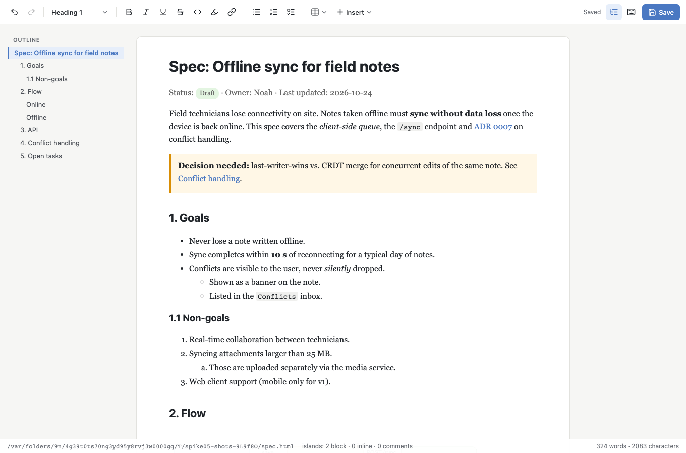
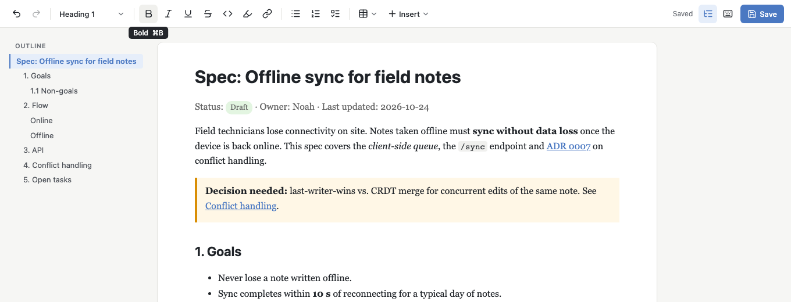
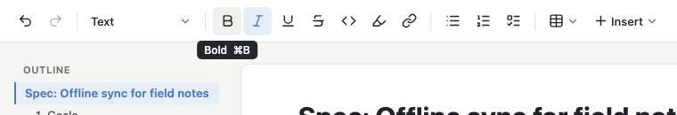
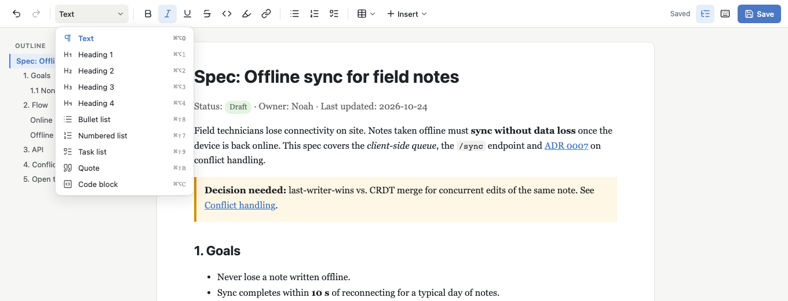
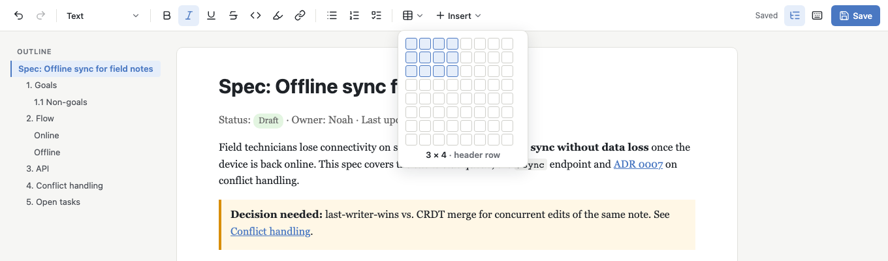
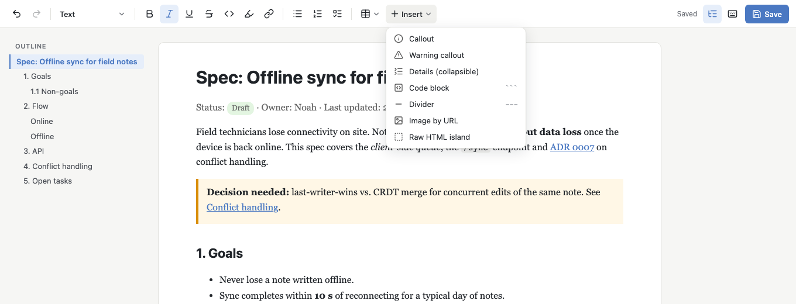
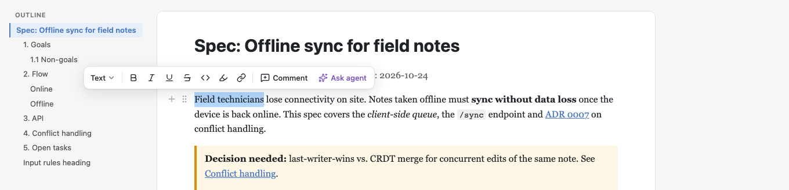
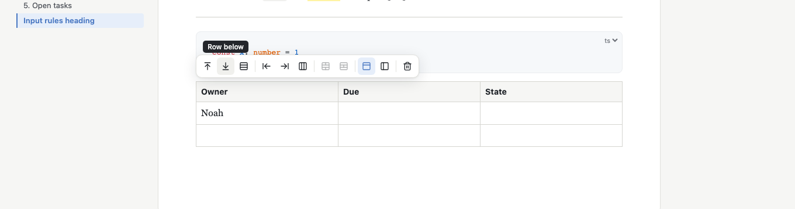
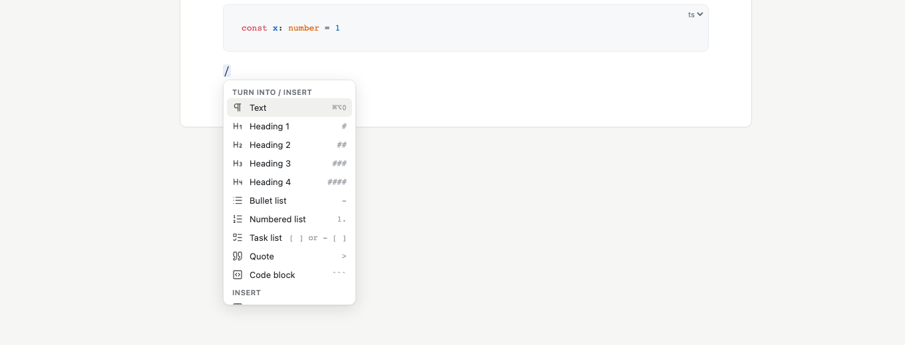
/ on a line and filter by typing; Enter inserts.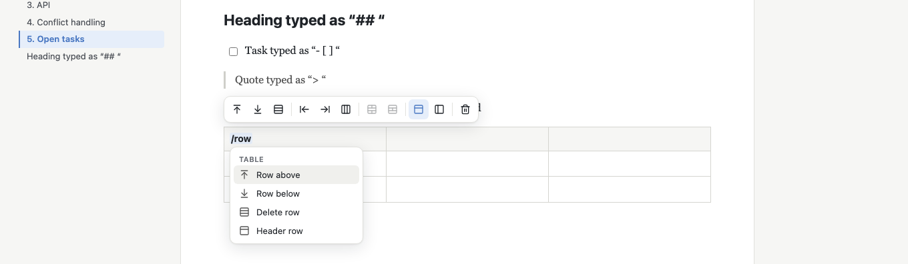
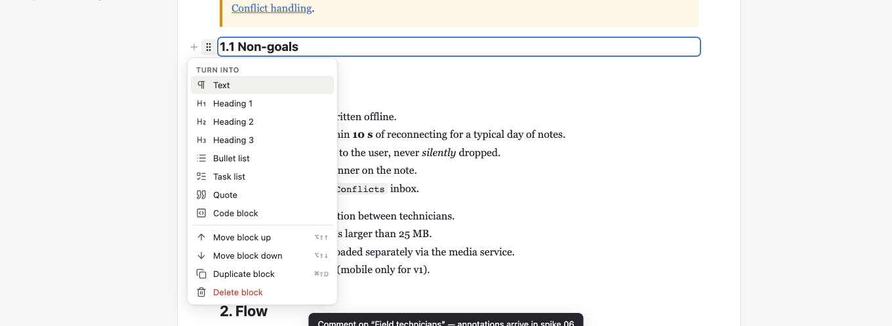
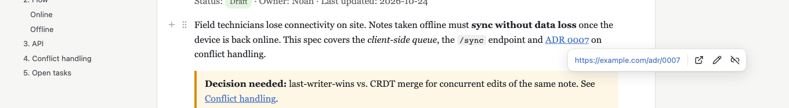
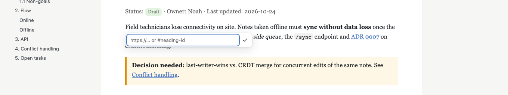
#heading-id, Enter applies.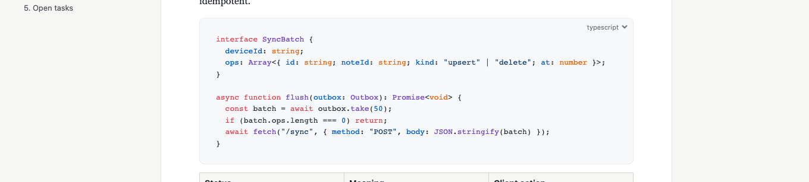
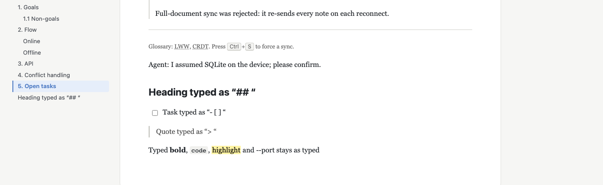
## , - [ ] , > , **bold**, `code`, ==highlight==; --port stays as typed. Note the quotes: Typography turned the typed " after a space into an opening “ (observed while taking this screenshot).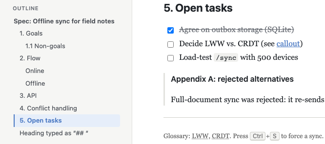
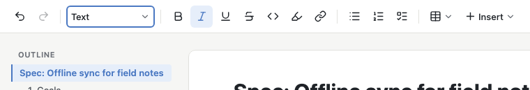
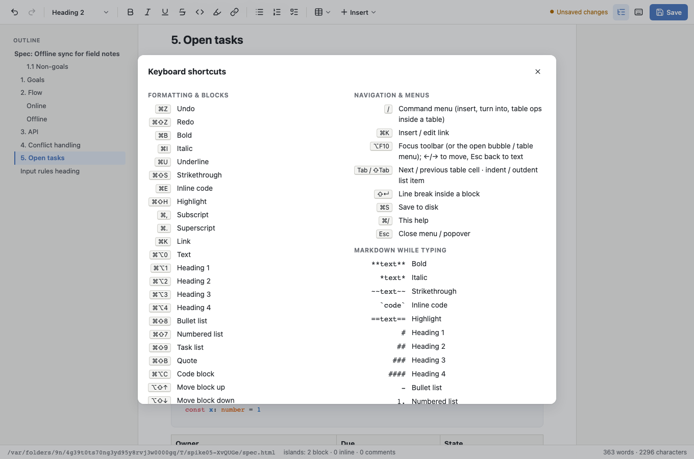
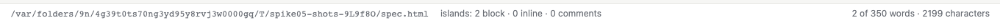
Problems found and how they were fixed
| Problem | Cause | Fix |
|---|---|---|
Every heading got a data-toc-id in the saved file | Tiptap's table-of-contents extension writes it as an attribute, and attribute preservation then keeps it forever | Own outline (~60 lines) built from the headings. General rule: check every extension for attributes it writes into the HTML; verify asserts none leak. |
--port became —port, and --- no longer made a divider | Typography's em-dash rule fires on the first two dashes | Em-dash rule switched off (emDash: false); verify types --port 5105 |
- [ ] created a task list inside a bullet item | - first makes a bullet list, then the task rule wraps the paragraph inside it | Own high-priority input rule that converts the bullet item into a task item. Caveat: it converts the whole bullet list. |
| A quick click after editing an SVG label, then a keystroke, replaced the whole diagram (spike 04 bug) | Tiptap's focus() runs one frame later; the late focus selected the whole island, so the next key overwrote it | The island view focuses synchronously (select the island node, focus the view directly). Rule: never use the delayed focus inside views that host their own editable content. |
| Clicking the outline right after an edit jumped to the wrong heading | The outline was rebuilt with a delay, so positions were stale | Rebuild on every change — under 1 ms for a spec-sized document |
| Table menu covered the cells being edited | Bubble placed at the caret | Anchored above the table (verify checks it doesn't overlap) |
| Link edit field lost its state | Tiptap's bubble only re-checks on selection/document changes and hides on blur | Own popover for links, positioned with @floating-ui/dom directly (the library inside Tiptap's bubble menu) |
| The caret line disappeared behind the status bar; the slash menu flipped upwards | No scroll margin at the bottom | Scroll margins plus 40% extra space below the document |
| Typing right after a click landed in the wrong place (in tests) | ProseMirror reads the click's selection asynchronously | Tests (and any agent driving the UI) wait one frame after a click |
| Console errors with two dev servers running | Vite opens its reload WebSocket on a fixed port even when disabled | Filtered in verify; noise only |
| Dropping a block on the right half of a short line puts it after that line | ProseMirror decides before/after by horizontal text position | not fixed — needs a custom drop rule ("upper half = before") |
| Only top-level blocks can be dragged | The drag handle's nested mode wasn't evaluated | not fixed |
| Typed quotes after a space become opening quotes (“## “) | Typography's smart quotes (observed in the screenshots above, not by the spike) | not investigated — likely also switch off smart quotes for specs |
Free vs. paid
Free (MIT) in Tiptap 3.32, several of them paid in v2: drag handle, table of contents, details, unique-id, file handler, emoji, mathematics, suggestion, bubble and floating menus, collaboration. Still paid: Comments, history/compare, AI, tracked changes, DOCX/PDF, Pages, UI Components (React only) — our own replacements are spikes 06–08.
Still missing from the UI (spike 05 inventory): find & replace, a colour picker, mentions/emoji/math, image upload by paste.
Evidence: 05 README · Free vs. Pro, UX inventory, Measured behaviour · npm run verify 76 + 48 checks · screenshots in 05-editor-ui/ (from verify) and summary-img/05-*.png (taken 2026-10-25 with 05-editor-ui/verify/summary-shots.ts).
06 · Annotations — comments in a live, co-edited document
worksQuestion. How do comments stay anchored while both sides edit, where are they stored, and how do they reach the agent?
Results
- Anchoring: positions stored next to the document (Yjs relative positions in a
commentsmap), drawn as highlights — not a mark inside the text. Measured over 14 scenarios: a mark loses the comment when the agent rewrites a block from HTML, when the file is edited on disk, and can't cover diagrams. The chosen anchors survive concurrent edits before, inside and after the comment, overlapping comments, and block/diagram comments. - When the agent replaces the commented text, the comment moves onto the new text. Deleting the text makes the comment "detached".
- Needed on top: each thread keeps its last-known quote and context; after agent edits the server re-anchors by quote, only inside the same block.
- Storage: in the Y.Doc (restored from
.ystateon restart) and mirrored to.collab/<doc>.comments.json. The HTML has no comment markup (verified). - Agent loop: the server derives events from the comment data and queues them;
waitreturns one JSON line with quote, context, block id, section, kind and messages. Measured: event queued 4 ms after the comment,waitexits ~420 ms later (400 ms of that is a batching window). Replies appear live via Yjs without a push. - Recommendation: review round by default (drafts, then "Send N to agent" as one event); Ask agent always immediate. Four kinds — comment, question, change request, looks good — act as instructions to the agent.
- Upstream bug found: in
@tiptap/y-tiptap3.0.10, when the agent edits earlier in the same paragraph, the user's caret jumps and their typing is scrambled (3/3 without the workaround, 3/3 clean with it). Applies to all collaboration, not just comments.
How it works
A comment is data next to the text, not markup in it. Each thread lives in the Y.Doc's comments map: kind, status, author, messages, and an anchor made of two Yjs relative positions — references to specific characters that stay valid while text around them is inserted or deleted, on any client. The editor draws the highlight from these as a decoration, so the HTML file never contains comment markup.
- Rescue. Each thread also stores its last-known quote and ~80 characters before/after. After an agent edit or a file merge, the server checks every thread: if the covered text no longer equals the quote but the quote is still in the same block, it re-anchors there. This catches y-prosemirror rewriting a whole paragraph as one replace.
- Why not just map positions through each transaction? We do — relative positions are that mapping, in a form that works across tabs, the server and restarts, where integer positions mapped in one editor would be wrong once others' changes arrive in a different order (local typing is additionally mapped with
tr.mapping). The rescue exists for edits where any mapping correctly reports "the quoted text was deleted" although identical text comes back: the agent's HTML-based edits are turned into one contiguous replace per changed text run (S5b), and a document rebuilt from a changed file (S10) has no history to map through. "Inclusive edges" is the stick-left/stick-right choice every mapping has to make (ProseMirror'sassoc): exclusive edges turn "agent replaces exactly the quoted text" into an orphan (S4, measured). A character-level diff for agent edits would make most rescues unnecessary — untested, see note N4. - Islands and blocks: the anchor surrounds the whole node; for an SVG label it additionally stores the label's path, and the island outlines that label.
- Entry points: bubble Comment / Ask agent (or ⌘⌥M), block menu → Comment on block, island toolbar → comment. Four kinds: comment, question, change request, looks good — they tell the agent whether to answer, edit, or do nothing.
- Margin: cards are aligned to their highlights and pushed down when they'd overlap; the active card sits exactly next to its anchor. Resolved threads are hidden until "show N resolved"; orphans go to "Detached".
- Events are derived from the Y.Doc, not posted by the browser: the server observes the comments map and queues
annotation_created,annotation_replyorreview_submitted. Each thread remembers which event announced it, so a second tab or a restart doesn't announce it twice, and the agent's own replies announce nothing. - The event contains enough to locate and understand the comment: quote, context, block id and text, section heading, kind, messages. Spike 06 framed this as "act without reading the file" — see note N11 for why that framing is a problem.
- Review round vs. immediately: in review mode comments stay drafts until "Send N to agent", which queues one
review_submittedwith all of them. "Ask agent" and replies to already-sent threads are always immediate. - Measured: event queued 4 ms after the comment;
waitexits ~420 ms later (400 ms batching window);collab reply~75 ms, the reply is in the card when the command returns.
Comment commands (collab CLI)
| Command | Spike | What it does | Evaluation |
|---|---|---|---|
threads [--all] | 06 | open threads with quote, context, messages | keep — overview after a restart or a long break |
reply <thread> [--resolve], resolve, reopen | 06 | answer, close, reopen a thread | keep; final shape depends on the comment design (N12, N17) |
comment <quote> <text> | 06 | the agent starts a thread on a quote | keep — the agent can ask the user in place; extend for unanchored comments (N16) |
accept <thread> | 08 | accept a proposal | remove from the agent's CLI — accepting is the user's decision (button in the browser); useful only in tests |
Schemas
From spike 06's code: src/comments/model.ts (thread), lib/comments.ts (sidecar, event payload), lib/eventQueue.ts (event envelope).
1 · A thread in the Y.Doc — ydoc.getMap('comments'): thread id → Y.Map
comments: Y.Map<threadId, Y.Map> // one Y.Map per thread → two threads never conflict
id: string // "t" + 6 random chars, e.g. "tq3k9x2"
kind: "comment" | "question" | "change" | "approve"
status: "open" | "resolved"
target: "text" | "block" | "island"
anchor: { start: RelPos, end: RelPos } | null // null = orphaned ("Detached")
quote: string // last-known covered text (refreshed by the server before each store)
prefix: string // last-known ~80 chars before
suffix: string // last-known ~80 chars after
blockId: string | null // data-bid of the innermost block with an id
leaf: { path: string, text: string } | null // island comments: the label inside the island
author: { name: string, kind: "user" | "agent", color?: string }
createdAt: number // ms since epoch
delivery: "now" | "review" | "none" // now = event on creation; review = draft until "Send N"; none = agent-created
ask: boolean // created via "Ask agent"
sentSeq: number | null // event seq that announced the thread (null = not sent yet)
resolvedBy: string | null
resolvedAt: number | null
messages: Y.Array<{ id: string, author: Author, text: string, ts: number, sentSeq?: number | null }>
delivered: Y.Map<messageId, seq> // written by the server only: which messages reached the agent
RelPos = Y.relativePositionToJSON(...) // Yjs JSON: { type?: {client, clock}, tname?: string, item?: {client, clock}, assoc: number }
// start: assoc -1 on the character before; end: assoc 0 on the character after
2 · .collab/<doc>.comments.json — readable mirror, recovery path
{
"version": 1,
"doc": "spec.html",
"threads": [
{
// every field of the thread above, as plain JSON (messages as an array),
// plus:
"delivered": { "<messageId>": <seq>, ... }
}
]
}
// Written with every store, only when the content changed.
// On restart the threads come from .ystate (exact anchors). Only when the Y.Doc had to be rebuilt from a
// changed HTML file are threads restored from this JSON: anchors are recreated from blockId / quote+prefix+suffix
// / island label; threads that can't be found stay orphaned.
3 · What the agent receives — one line from collab wait
// envelope (every event)
{ "status": "events", "events": [ { "seq": number, "ts": ISO string, "type": string, ...payload } ] }
// type "annotation_created" — payload = Annotation + respond hint
{
"thread": "tq3k9x2",
"kind": "change", // comment | question | change | approve
"ask": false,
"target": "text", // text | block | island
"status": "open",
"author": "Noah",
"body": "Is this the same as the outbox?", // first message
"messages": [ { "author": "Noah", "agent": false, "text": "…" } ],
"quote": "client-side queue", // current text if anchored, else last-known
"prefix": "…This spec covers the ", // up to 80 chars
"suffix": ", the /sync endpoint…", // up to 80 chars
"section": "Spec: Offline sync…", // nearest heading above
"block": { "id": "iudwb4", "type": "paragraph", "text": "Field technicians lose…" }, // block text ≤ 500 chars
"leaf": null, // { path, text } for an island label
"orphaned": false,
"respond": "npm run collab -- reply tq3k9x2 \"<text>\" [--resolve]"
}
// type "annotation_reply" — a user replied in a thread the agent already knows
{ "thread", "kind", "quote", "orphaned", "author", "text", "messages", "respond" }
// type "review_submitted" — "Send N to agent"
{ "by": "Noah", "count": 2, "annotations": [ Annotation, ... ], "respond": "per thread: … reply …; edit with … " }
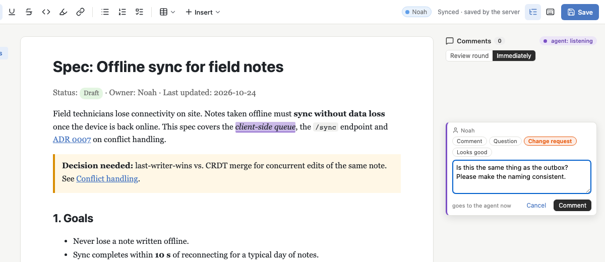
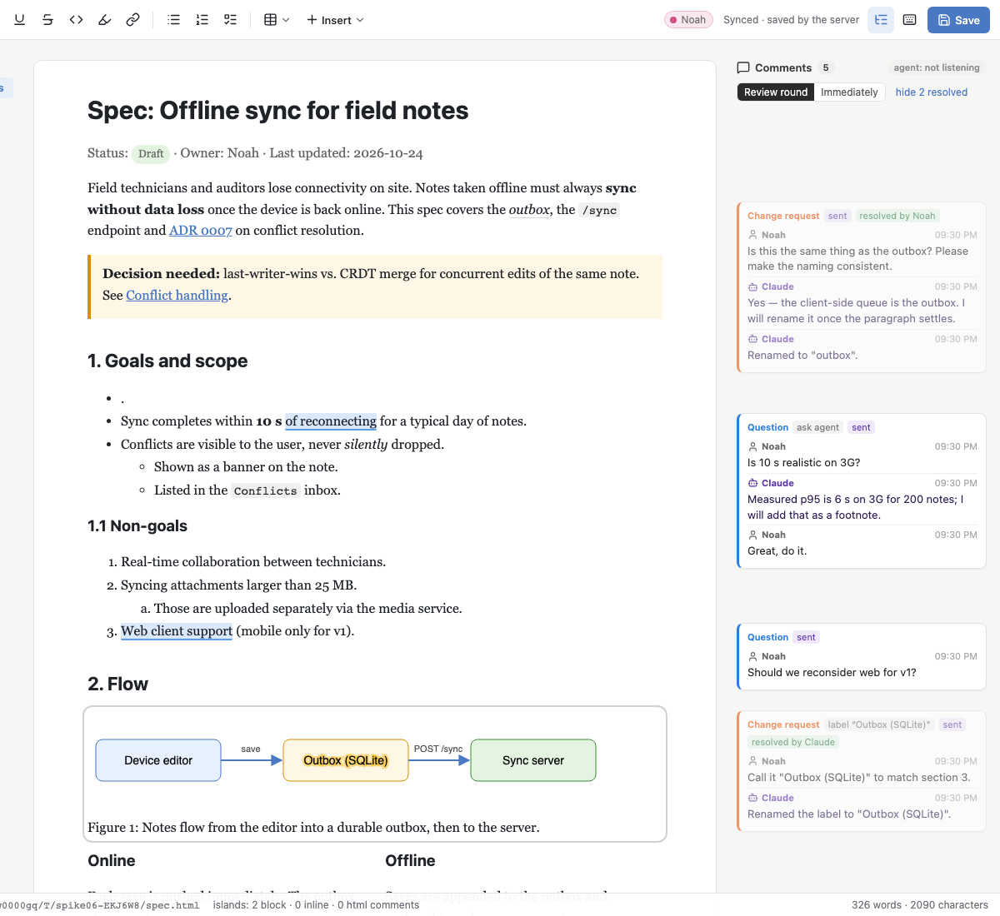
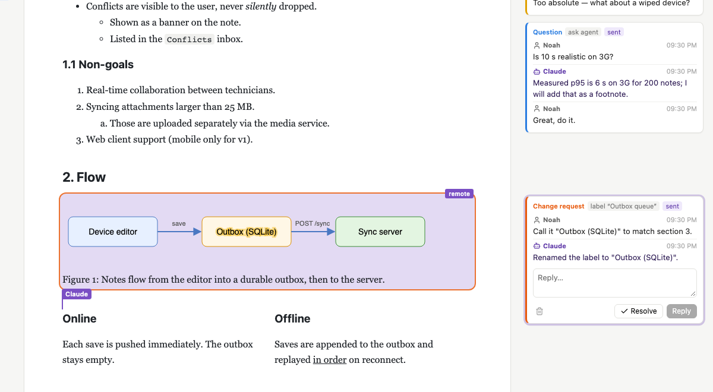
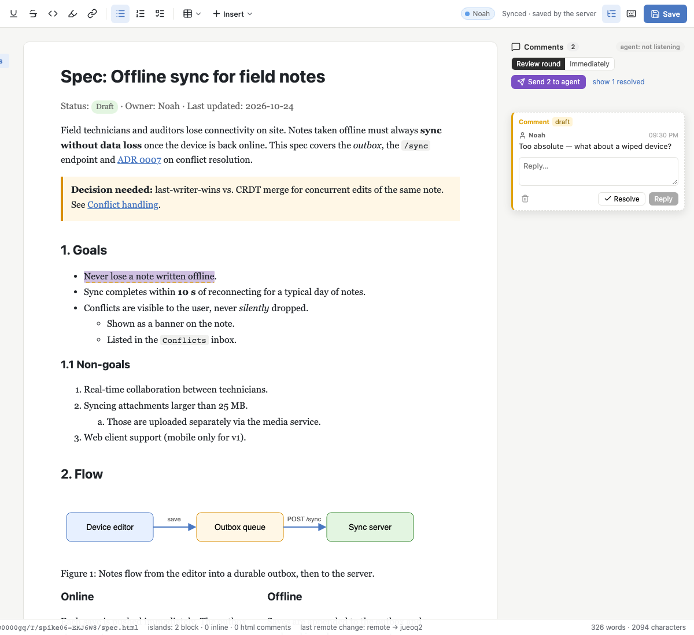
More screenshots
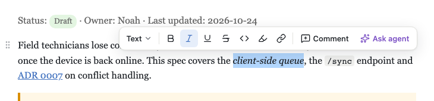
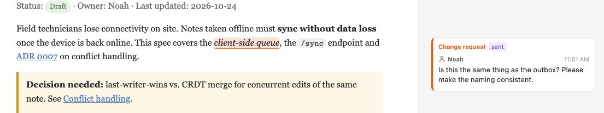
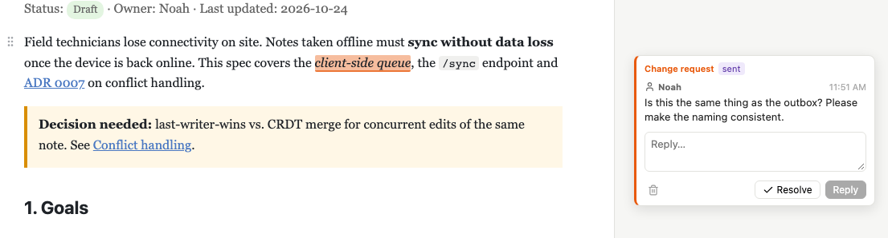
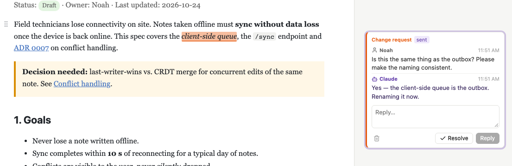
collab reply, appears live in the card.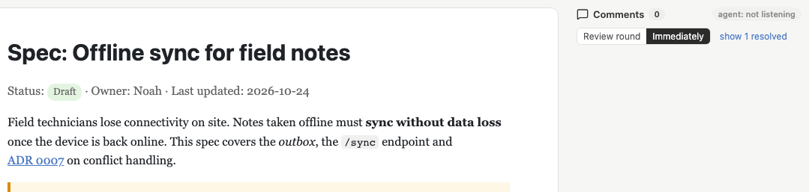
reply --resolve the card is gone, the header offers "show 1 resolved".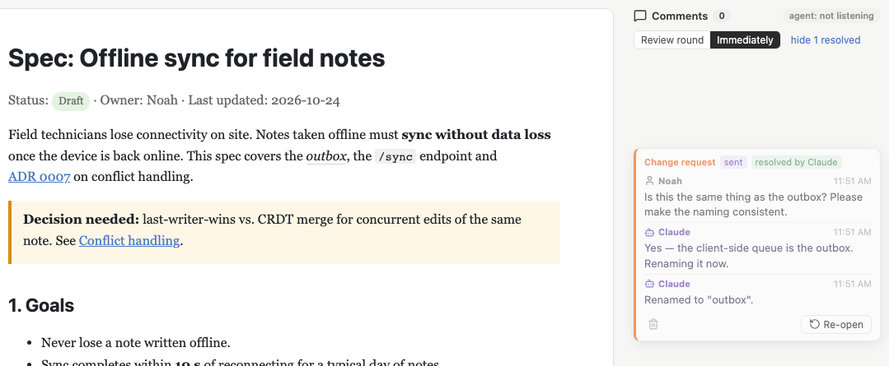
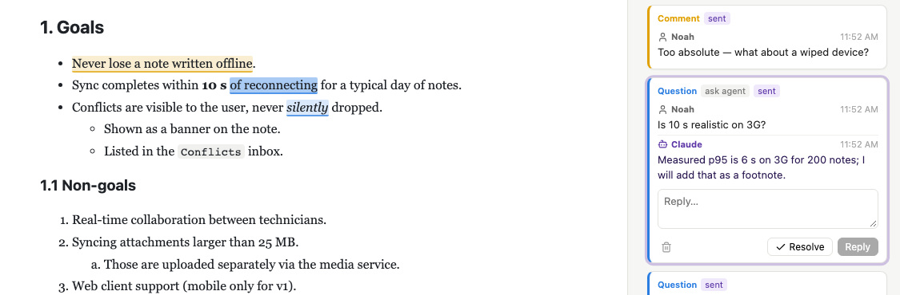
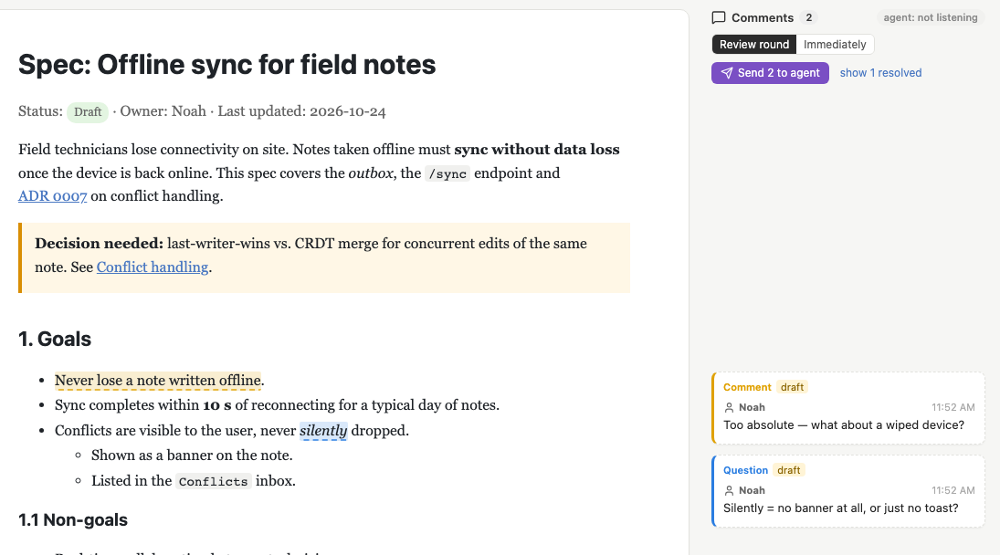
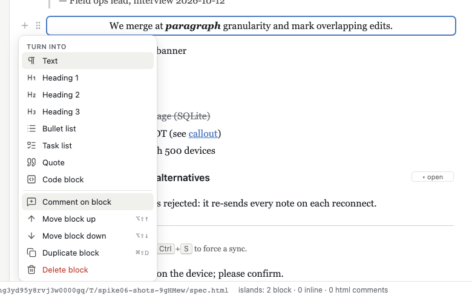
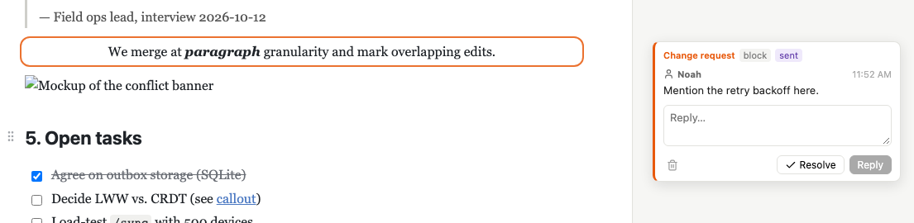
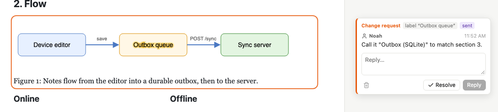
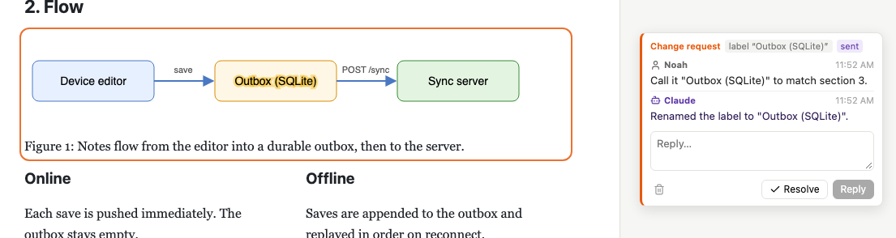
set-island-text.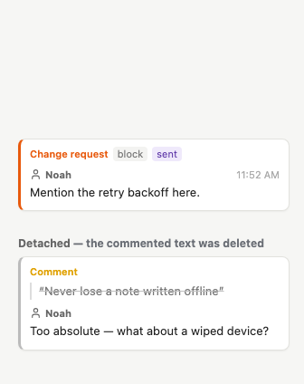
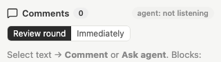
collab wait running …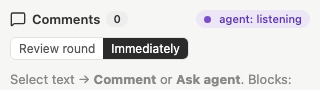
Evidence: 06 README · Findings §1–5, Verdict · npm run verify 49 checks.
07 · Collaboration — can user and agent edit at the same time?
yes, 2 edge casesQuestion. Does Tiptap collaboration (Yjs) remove the problem of two writers on one file?
Results
| Scenario | Observed | OK? |
|---|---|---|
| User types in paragraph A, agent rewrites paragraph B | both kept; agent update 74–94 bytes; "Claude" caret and highlight shown | yes |
| Same paragraph, different positions | both kept — measured with the user typing at the start while the agent changed the last words, i.e. the user outside the agent's changed span (see below) | yes, outside the span |
| Same word | both kept: the user's letter is left over inside the agent's new text ("Xnetwork access"); caret doesn't jump | partly |
| Agent replaces the whole paragraph the user types in (same block type) | turned into a text diff (see below); the user's addition at the end survives | mostly |
| Same diagram, edits 400 ms apart | both kept | yes |
| Same diagram, concurrent | one side lost (the island is one value); soft lock built: agent waits, then exits 5 "locked by Noah" | no |
| Undo | ⌘Z undoes only the user's edits (after a fix) | yes |
| Browser offline while the agent edits | converges on reconnect | yes |
| File edited on disk while live | merged in 37 ms (759 B update), concurrent typing kept, no echo loop | yes |
| Server restart | restored from .ystate; HTML correct, <head> byte-identical | yes* |
What "turned into a text diff" means — and its limit. When the agent's version of a paragraph differs, y-tiptap (updateYText → simpleDiff) keeps the longest common start and end of the old and new text and turns everything between them into one delete + one insert, relative to the base version. So the agent's edit is always one contiguous span, from its first to its last changed character — even if it only changed two words far apart (the unchanged text between them is deleted and re-inserted; this is also why comments there need the rescue, spike 06 S5b).
- You type outside that span (S2: start vs. end; S3b: you add at the end): your characters are separate inserts and survive in place.
- You type inside the span (e.g. between two words the agent changed): measured in spike 11 — 0/10 clean (8 garbled, 2 lost), caret jumped every time; a word-level diff prototype made it 15/15 clean. Original expectation: By Yjs semantics your characters are kept (a delete never removes someone else's concurrent insert) but they sit next to deleted characters, so they end up before or after the agent's re-inserted copy rather than where you typed — the kind of garbling seen in S3a ("Xnetwork access") and in spike 08's runs ("a numberfrom"). Spike 08's fixes work between blocks, not inside one. A character-level diff (note N10) would replace only the changed spots.
* After a rebuild from a changed file, a browser with pending offline edits would lose them. Block-type change while the user types: measured in spike 11 — characters kept except the one in flight, but the agent moves the caret to the next block (no caret records); set-block also drops text typed since the last read.
- Agent addressing: block ids (
data-bid, add about 1 KB to the 7.3 KB sample) and text search both built. Recommendation: text search for prose, ids for structure and the UI. - Agent connection: as a WebSocket client (presence, live typing) or via a server endpoint (1–3 ms). Recommendation: thin CLI → server endpoint for the skill.
- Fixes needed: redo broke after the first plugin re-registration → own undo manager; plus several Hocuspocus/Vite setup details.
How it works
- Server-side seeding. The server fills the Y.Doc from
.ystateor the HTML before any browser connects; browsers never load content themselves, so two tabs can't both initialise an empty document. - The agent always goes through the
collabCLI. The two boxes on the right are the CLI's two ways of reaching the server: in ws mode the CLI process joins the live session itself (own document copy, own caret — used for the live-typing demo); in HTTP mode it sends a request (/agent/op; in spike 08/agent/read,/agent/patch) and the server applies the change to its Y.Doc and sets the agent's caret. Spike 07 recommends HTTP mode for the skill: the CLI stays a thin client. - Agent as a collaborator. Its edits are ProseMirror changes computed on the server and turned into small Yjs updates (74–94 bytes for a block rewrite). It appears with its own name "Claude" and colour and keeps its caret at the change for a moment (
--linger, default 1.5 s). Only in ws mode does the CLI first point the caret at the target and wait up to 400 ms before editing — a UX choice so you see where something is about to change, not needed for correctness and not evaluated; HTTP mode and spike 08'spatchapply immediately. - Agent highlight. When a change arrives from someone else, the editor compares blocks by block id: changed blocks flash in that person's colour with a name tag and fade over 2.5 s; moved blocks don't light up; the first load and your own undo don't either. The status bar shows the last remote change. Attribution is by presence (Yjs updates carry client ids, not names) — exact with one agent, approximate with several.
- "Claude is editing…" in the toolbar while any other participant has a published caret; presence chips for everyone online. "Caret published" means: that participant's editor has focus — y-tiptap shares the cursor only while focused and clears it on focus-out — so it is not "is typing". With two of your own tabs, one shows "… is editing" while the other's editor has focus, even idle, possibly with your own name (names come from
?user=); whether a tab in a background window counts as focused was not checked. The agent's caret exists only around its edits (HTTP mode: set after the edit, cleared after the linger time, default 1.5 s), so for user + agent the label mostly fits. An activity-based indicator ("changed something in the last few seconds", own tabs excluded) would be accurate — untested. - Undo only undoes your own changes (Yjs tracks who made each change); needed an own undo manager because Tiptap's broke redo after the first plugin re-registration.
- Island soft lock — see the box below.
- Offline. The tab keeps working and shows "Offline — edits are kept locally"; on reconnect both sides merge. Pending offline edits live only in the tab's memory (no browser storage yet).
Agent demo client (spike 07)
| Command | Spike | What it does | Evaluation |
|---|---|---|---|
type <find> <text>, --via ws | 07 | type character by character as a live collaborator | remove — demo of presence; HTTP mode is recommended |
The island soft lock
- Why it exists: an island's whole source is stored as one value. Yjs can merge two people typing in the same paragraph character by character, but two changes to the same single value are last-writer-wins: if you edit one SVG label while the agent edits another label in the same diagram, one of the two edits disappears completely (spike 07, scenario S4b: the agent won in 2 of 3 runs, decided by Yjs client ids).
- What it is: an advisory "I'm editing inside this island" marker. When your focus enters an island, your browser publishes
island: "<figure class=\"diagram\">"(the island's opening tag) on the presence channel that also carries your name and caret; it is cleared when you leave. - How it helps: before
set-island-text, the agent CLI checks whether someone else has that island marked. If so it re-checks every 100 ms for up to--lock-timeout(default 2 s); if you're still inside, it refuses with exit 5 andlockedBy: "Noah"instead of silently overwriting your edit. The agent can then retry, ask, or propose.--forceoverrides. Measured: the agent waited 408 ms and named the user; after the user left, the edit went through. - Limits (from the code, not tested):
- Only the ws-mode CLI checks it, and only for
set-island-text. HTTP mode (/agent/op) and spike 08'scollab patch— the recommended path — don't look at it; patch's caret warning works on text carets, and focus inside an island isn't one. So today the lock is not honoured on the recommended path. - Soft: only the agent respects it; you are never blocked, and an edit you start right after the agent's check still collides.
- Identity is the opening tag, so two islands that start identically (two
<figure class="diagram">) share one lock. - The UI shows no lock indicator.
- Only the ws-mode CLI checks it, and only for
- The real fix is storing each island label as its own value (spike 07 open question); spike 10 removes the need for prose by using generic nodes, which merge per character. SVG stays an island.
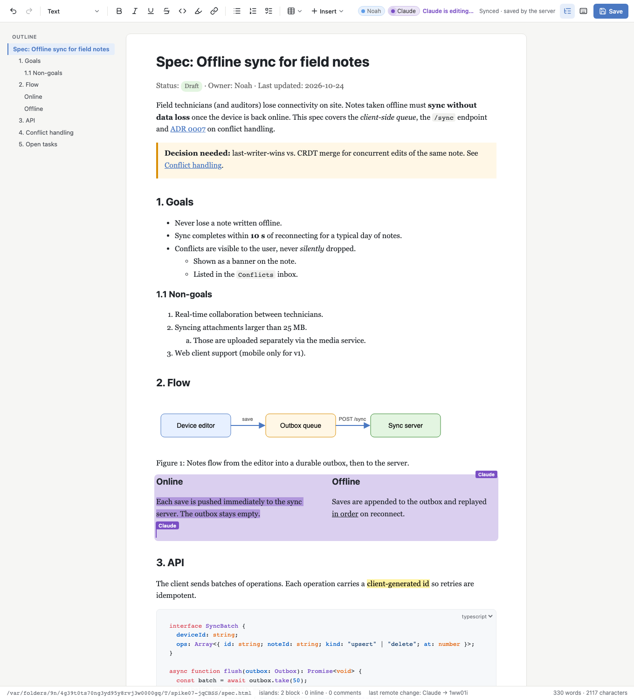
More screenshots
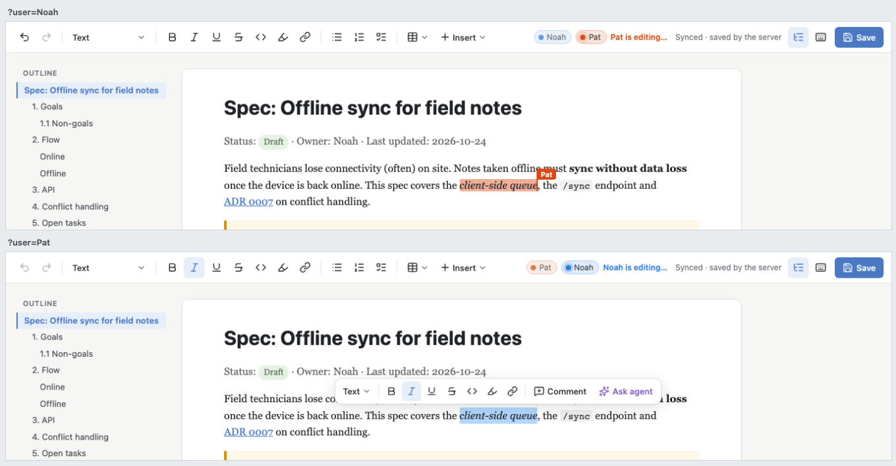
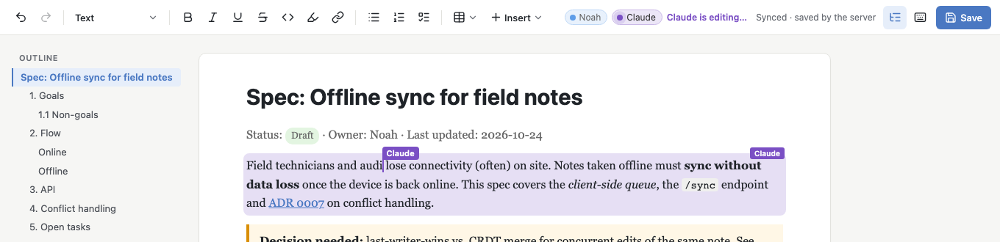
agent type --type-delay 90): "Claude" caret, flash with name tag, "Claude is editing…".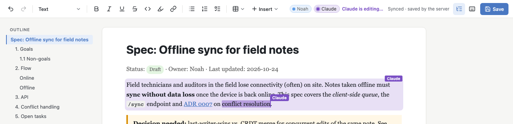
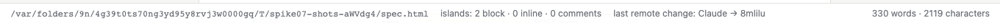
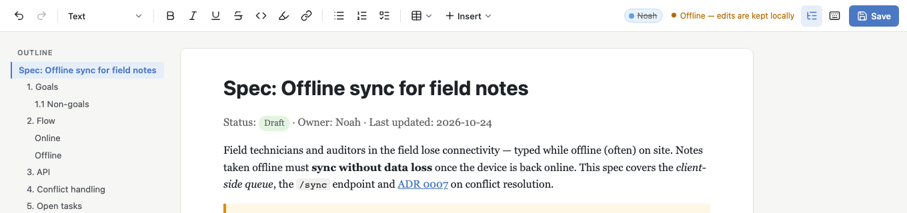
set-island-text waits. The UI itself shows no lock indicator; the refusal is in the CLI output below.Agent refused by the island lock (exit 5) — CLI output (07-island-lock.txt)
# user Noah has the caret inside the SVG label "POST /sync" (island soft lock via awareness)
$ npm run agent -- set-island-text '>save<' '>save (local)<' --lock-timeout 1500
connected to ws://127.0.0.1:53672/collab as "Claude" in 8 ms (25 blocks)
via: ws
op: set-island-text
locked: true
lockedBy: Noah
island: <figure class="diagram">
waitedMs: 1518
(exit 5)
$ npm run agent -- set-island-text '>save<' '>save (local)<' --lock-timeout 1500 --json
connected to ws://127.0.0.1:53672/collab as "Claude" in 8 ms (25 blocks)
{"via":"ws","op":"set-island-text","locked":true,"lockedBy":"Noah","island":"<figure class=\"diagram\">","waitedMs":1516}
(exit 5)Evidence: 07 README · Concurrency scenarios, Agent addressing, Persistence, Things that broke · npm run verify 65 checks, 3 runs.
08 · Agent edit path — how should Claude edit the live document?
collab patchQuestion. With the document open and the user typing: Edit tool on the file (P1), CLI ops (P2), collab patch (P3), or export → edit → apply (P4)?
Results — real run (a subagent did 8 tasks per path while a scripted user typed)
| P1 Edit on file | P2 ops | P3 patch | P4 export/apply | |
|---|---|---|---|---|
| tasks done | 8/8 | 8/8 | 8/8 | 8/8 |
| agent-side failures | 2 Edit refusals ("File has been modified since read…") | 0 | 0 | 0 |
| noise | ≈12 "changed on disk" notices in 2 min | none | none | none |
| characters sent | ≈4.4 k | ≈1.9 k | ≈2.1–4.1 k | ≈4.3 k |
| user typing lost | 1/15 | 0/7 | 2/10 → 0/6 after fixes | 1/8 |
- Loss causes found, all fixed in the merge engine: (1) the server's save could overwrite an agent file edit not yet merged; (2) re-parsing a whole block ate a trailing space the user just typed; (3) when one update inserts a block before the user's and also edits theirs, the user's keystrokes landed in the agent's new block; (4) moved sections are re-created, losing text typed into them. Plus a dev-setup issue: Vite reloaded the page on every save.
- After fixes: scripted comparison with a browser user typing in the touched blocks — 0 lost on all four paths.
- Reading: the file lags up to ~3.2 s behind the live doc;
collab read(--outline,--section,-n) is current and shows "✎ Noah" on the block where the user types. - Suggestion mode:
patch --proposecreates a change thread with Accept / Reject (built, small). Limit: an accepted change is applied by the server, so it's not on the user's ⌘Z stack. - Tooling: a heredoc piped into
npm run …was refused by Claude Code's guard; intonodeit worked → the product CLI should be a plain binary. - Recommendation:
collab patchby default; ops for move, reply/resolve, single SVG labels; export/apply for big rewrites; no Edit/Write on the open file (optionally enforced by a PreToolUse hook).
collab read and the user's caret
- Why read through the CLI: the file lags the live document by up to ~3.2 s (written 0.8 s after the last change, at most every 3.2 s while typing) and reading it with the Edit tool causes "modified since read" refusals.
collab readreturns the live document's HTML in exactly the formpatchmatches against. - Why the caret matters: edits where a human is typing are the risky ones — rewriting the words being typed (07 S3a), typing inside the agent's changed span (07), caret jumps (06). The server uses carets four ways:
read --outlinemarks the block ("✎ Noah");patchwarns when it changes a caret block;--avoid-caretrefuses (exit 5) /--proposeturns it into a proposal; and the merge keeps caret blocks in place when blocks are reordered. - Several tabs / people: the server collects every participant's caret except one named "Claude" (
humanCarets); each is shown, warned about, and protected. y-tiptap publishes a caret only while that tab's editor has focus, so usually only the tab you work in counts. Fragile (from the code, not tested): the agent is recognised only by its name "Claude"; two focused windows of the same user appear as two "Noah" carets.
Reading and editing commands (collab CLI)
Written in the spikes (by the spike subagents) — not Tiptap or ProseMirror commands; internally they are built on ProseMirror transforms and y-prosemirror's updateYFragment. The evaluation is my assessment from the spike results.
| Command | Spike | What it does | Evaluation |
|---|---|---|---|
| Reading | |||
read [--outline] [--section h] [-n] | 08 | live document as HTML; outline with block ids and "✎ user"; one section; line numbers | keep — the agent's only way to read while the doc is open |
list | 07 | blocks with ids | remove — covered by read --outline |
text | 06 | plain text of the document | remove — hides island text; spike 08's rename needed a full read anyway |
check <file> | 03 | run the real schema headlessly, report islands / lossy constructs with line numbers and fixes | keep, make it a collab command — feedback is what protects editability (03); should also print the per-element mode from spike 10 |
| Editing | |||
patch [--dry-run] [--avoid-caret] [--propose] | 08 | SEARCH/REPLACE blocks on the live HTML, merged into the live doc | keep — the default; --avoid-caret under review (N18, N19) |
move-section <heading> <before> | 08 | move a section | keep — half the characters of a patch, and moves need the live-content handling |
set-island-text <find> <replace> | 07 | change one label inside an island | probably remove — patch edits islands too (spike 08 verify T6: SEARCH >Sync server< → >Sync API<); set-island-text only saves characters and checks the island lock (ws mode only). Both overwrite the whole island. Drop it once the lock question is solved (N20). |
export / apply | 08 | edit a snapshot copy freely, merge it back | keep as fallback for large rewrites. Loses typing where a block is re-created instead of updated: measured for a section the agent moved and changed after export (Yjs has no move; the re-inserted copy is the agent's old one); from the code also when the old and new block can't be paired (no shared data-bid, type changed, text similarity < 0.5). The old base (minutes) makes both likelier. Not mainly a character-level-diff issue — that one garbles rather than loses. Spike 11 measures related cases. |
replace-text, set-block, insert-after, insert-after-heading, append-section | 07, 08 | named single-purpose edits | remove — patch covers them; spike 08: don't grow the op vocabulary. (Spike 11 measures some cases with them; keep internally for tests.) |
What a "section" is (move-section, read --section; from sectionRange in lib/agentOps.ts)
- Start: the first top-level heading (
h1–h6) whose text contains the given string (case-insensitive). End: the next top-level heading of the same or a higher level, or the end of the document — so anh2section takes itsh3subsections along. move-sectionmoves it before another section's heading or to the end ($end); a target inside the moved section is refused.- Limits: headings inside containers (
<section>, callouts, grid columns) are invisible, so documents structured with<section>elements can't use it (fall back topatch); the first substring match wins ("goals" hits "1. Goals" before "1.1 Non-goals"); targets are only "before a heading" or the end. → Flat, heading-structured HTML is another rule for the agent instructions (N6).
CLI ops vs. collab patch
Both are collab commands that change the live document through the server. The difference is how the agent describes the change.
| CLI ops (P2) | collab patch (P3) | |
|---|---|---|
| Form | a fixed set of named operations: replace-text "find" "replace" [--all], set-block <id> '<html>', insert-after "find" '<html>', insert-after-heading, append-section, move-section "heading" "before", set-island-text, reply/resolve | one command; SEARCH/REPLACE blocks on the live HTML from collab read — the Edit tool's old/new format; several blocks applied together |
| Coverage | only what an op exists for — spike 08 had to add insert-after and move-section for its 8 tasks | any change |
| Characters for the 8 tasks | ≈1.9 k (fewest) | ≈2.1–4.1 k |
| Moving a section | two short arguments | the section twice |
| Traps | pick the right op; replace-text --all would also rename identifiers in code blocks; collab text hides island text | SEARCH must match exactly once (errors carry the fix) |
| Concurrent typing lost (real run) | 0 — each op is its own small update | 2/10 before spike 08's merge fixes, 0 after |
Recommendation (spike 08): patch by default; ops only where clearly better — move-section, reply/resolve, set-island-text for one label. Don't grow the op vocabulary.
How collab patch works
- Why SEARCH/REPLACE: it is the Edit tool's old/new-string format, which Claude already writes fluently, but applied by the server to the live document — no file, no "modified since read", and the merge base is milliseconds old. All blocks of one task go into one patch, applied atomically.
- Matching: exact first, then insensitive to whitespace runs, because the server re-wraps lines while you type. A looser rule that also ignored whitespace around tags was dropped — it swallowed meaningful spaces.
- Errors carry the fix:
NOT_FOUNDreturns the closest block's current HTML (in verify the user had typed into the agent's search text; the retry fromclosestworked without re-reading).AMBIGUOUSlists every match with line and context. - Your caret: the server knows from awareness which block you're typing in. By default the patch applies and returns a warning;
--avoid-caretrefuses with exit 5USER_IN_BLOCK;--proposeturns it into a change thread instead. - Suggestion mode (small version): the proposal is a "change" thread anchored at the search text, with a −/+ preview and Accept change / Reject. Accept re-runs the patch against the current document; if the text changed meanwhile, the thread shows "Could not apply" and stays open for the agent. Accepted changes are applied by the server, so they're not on your ⌘Z stack.
- Other commands kept where they're clearly better:
move-section(two short arguments instead of the section twice),reply/resolve,set-island-textfor one label;export→ edit freely →applyfor big rewrites.
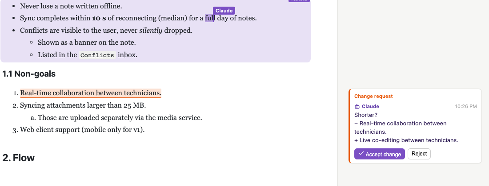
More screenshots and CLI output
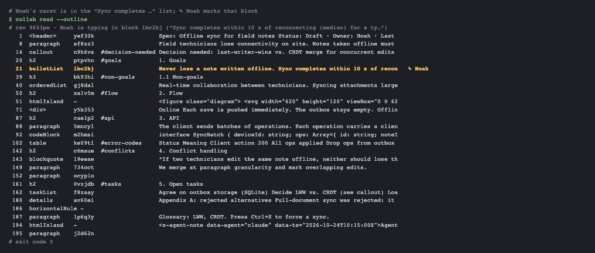
collab read --outline while Noah types: one line per block with line number, block id and #id; his block is marked "✎ Noah".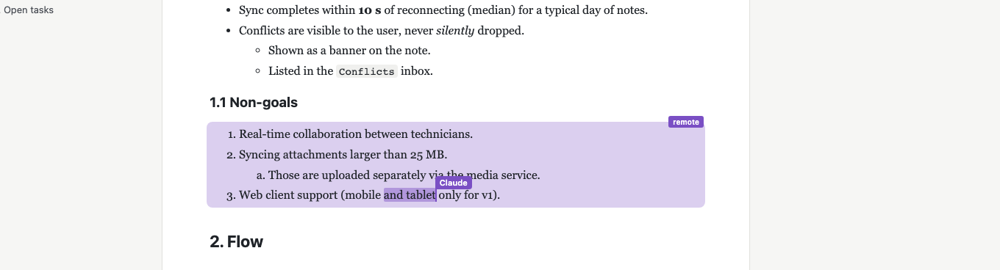
collab patch: the changed list flashes and the "Claude" caret sits at the change. The flash tag says "remote" because the change arrives before the agent's caret does.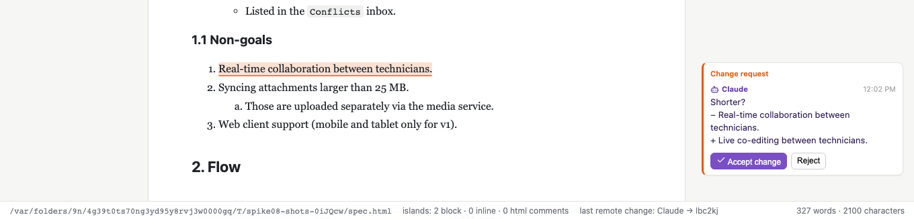
patch --propose: change thread with −/+ preview, Accept change / Reject.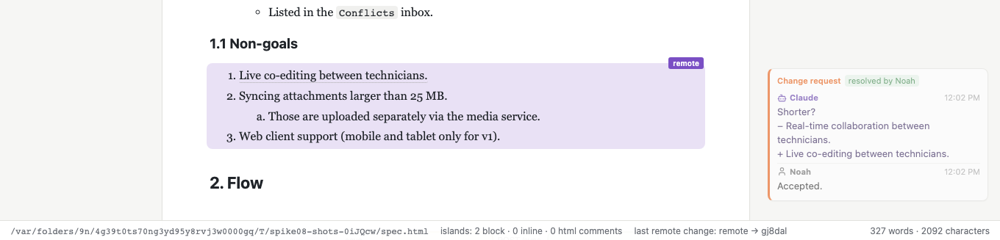
Patch into the block you are typing in: applied, with a warning — CLI output (08-patch-warning.txt)
# same patch without --avoid-caret: applied; the warning names Noah, whose caret is in that block
$ collab patch <<'EOF'
<<<<<<< SEARCH
of reconnecting (median) for a typical day
=======
of reconnecting (median) for a full day
>>>>>>> REPLACE
EOF
{
"ok": true,
"applied": 1,
"reparsedBlocks": 1,
"replaced": [
1
],
"fuzzy": [],
"touchedBlocks": [
4,
4
],
"updateBytes": 61,
"rescuedComments": [],
"warnings": [
"Noah's caret is in a block you changed (“Sync completes within 10 s of reconnecting (median) for a ty…”): their typing is merged, re-read before editing that block again"
],
"ms": 18
}
# exit code 0Same patch with --avoid-caret: refused, exit 5 USER_IN_BLOCK — CLI output (08-avoid-caret.txt)
# Noah's caret is in the block → --avoid-caret refuses, exit 5 USER_IN_BLOCK
$ collab patch --avoid-caret <<'EOF'
<<<<<<< SEARCH
of reconnecting (median) for a typical day
=======
of reconnecting (median) for a full day
>>>>>>> REPLACE
EOF
{
"status": "error",
"ok": false,
"code": "USER_IN_BLOCK",
"error": "Noah is typing in a block this patch changes (“Sync completes within 10 s of reconnecting (median) for a ty…”). Retry in a few seconds, make the edit smaller, or propose it (--propose).",
"carets": [
{
"name": "Noah",
"block": "lbc2kj",
"text": "Sync completes within 10 s of reconnecting (median) for a ty"
}
]
}
# exit code 5Outdated search text: NOT_FOUND with the closest block's current HTML — CLI output (08-not-found.txt)
# the user typed “(median)” inside the SEARCH text after the agent read it → NOT_FOUND, `closest` has the current HTML
$ collab patch <<'EOF'
<<<<<<< SEARCH
of reconnecting for a typical day
=======
of reconnecting for a full day
>>>>>>> REPLACE
EOF
{
"status": "error",
"ok": false,
"code": "NOT_FOUND",
"error": "edit 1/1: old string not found in the live document. The document may have changed since you read it (the user is editing too), or the string never matched. The closest block is at line 21; its CURRENT html is in \"closest\". Copy old from there and retry.",
"edit": 1
}
--- closest block, line 21 (current html):
<ul data-bid="lbc2kj">
<li><p data-bid="norh74">Never lose a note written offline.</p></li>
<li>
<p data-bid="8axldq">
Sync completes within <strong>10 s</strong> of reconnecting (median) for a typical day of
notes.
</p>
</li>
<li>
<p data-bid="jpgjjm">Conflicts are visible to the user, never <em>silently</em> dropped.</p>
<ul data-bid="44fb9i">
<li><p data-bid="ff9xuv">Shown as a banner on the note.</p></li>
<li>
<p data-bid="uhzkg1">Listed in the <code>Conflicts</code> inbox.</p>
</li>
</ul>
</li>
</ul>
# exit code 1Evidence: 08 README · Findings §1–5, Verdict · raw runs in experiments/runs/ · npm run verify 46 checks.
09 · Shell + journal sidebar
builtQuestion. Can the page around the editor be configured, for example with a tab showing the brainstorming journal, and does it update live?
Results
- Config:
.collab/<doc>.shell.json(or--shell) — an ordered list of panels with a side:outline,comments,activity,file(render as markdown / journal / html / text),iframe,links. Owned by the server; resize, collapse and active tab are stored per viewer. CLI:collab panel add|set|remove|open,collab layout. An invalid config is rejected with a readable error and the last good one stays. - Journal format (brainstorm plugin): one
decisions.mdwithF-N / D-N / Q-N: [status] …entries; rejected approaches have no ids. The parser finds exactly the entriesgrepfinds in the three real journals indocs/brainstorm/. - Live: appended journal entry visible in 63–78 ms; config changes ~55 ms. Real journals (up to 202 entries, 185 KB) parse in ≤2.1 ms.
- References:
D-3in the spec is clickable with a summary tooltip, never written into the HTML. Comments on journal entries reachcollab waitas events (not stored as threads). - Gaps: references inside diagrams aren't clickable; rejected approaches numbered by position (R-1, R-2…) shift when one is inserted; file panel paths aren't restricted; no narrow-screen layout; the demo's mockup image is broken.
How it works
- Config is shared, layout is personal. Which panels exist, on which side, in which order is the server's config — every tab updates live. Resizing, collapsing and switching tabs is stored per viewer in the browser; an explicit agent command (
collab layout,panel add --open) wins once over that. - Watch folders, not files: a watch on a file breaks as soon as a tool replaces the file (as the Write tool and editors do). Watching the folder, filtered by name and compared by content hash, works for appends, rewrites and the server's own writes.
- Journal panel: parses the brainstorm skill's entries (
F-,D-,Q-, plus rejected approaches numberedR-) into a list with type filters, search, status pills and superseded/refuted styling; long entries are clamped with "more". - References:
D-3etc. in the spec are decorated only if that id exists in the journal; hover shows the summary, click opens the journal at the entry. Never written into the HTML. - Safety: HTML panels in a sandboxed iframe without scripts; Markdown with raw HTML escaped; an invalid config is rejected with a readable error and the last good one stays.
Page commands (collab CLI)
| Command | Spike | What it does | Evaluation |
|---|---|---|---|
shell | 09 | list panels and the config path | keep |
panel add|set|remove|open | 09 | manage sidebar panels; open a journal entry | keep — the brainstorm integration uses panel add and panel open --entry |
layout <side> [--width] [--collapsed] [--active] | 09 | change sidebar layout | rethink — overrides the user's own layout ("last explicit action wins"); probably only --active is needed |
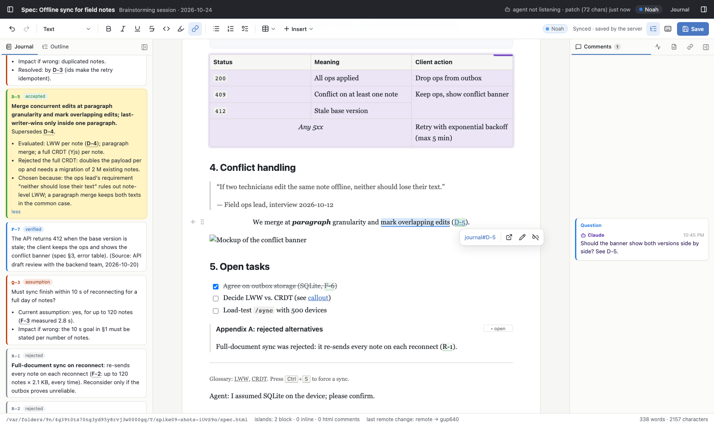
collab panel open mockup.More screenshots
D-3 opens the journal at D-3. The tooltip in this image was drawn by the screenshot script with the real tooltip text, because headless screenshots don't show hover tooltips.collab panel add file …, newly added line flashing.Evidence: 09 README · Findings §1–7, Verdict · npm run verify 47 checks.
10 · Generic nodes instead of islands, protected like table cells
simple rule confirmedQuestion. Can unknown elements become editable generic nodes (tag + all attributes, text in Tiptap's tree) instead of islands — and can they be protected from Tiptap's structure-destroying edits? Two rounds:
- Round 1 built generic nodes, a per-element policy (
data-edit, selector rules, free/locked), an SVG-as-nodes experiment, a first delete widget, and an interaction matrix (39 interactions × 6 node kinds, real keyboard and mouse). It found free generic nodes — and spike 04's containers (div,section…) — structurally fragile, and protected them with a lock that rejected whole transactions. - Round 2 applied your decisions: the simple rule (N21), protection modelled on Tiptap's table cells instead of a lock, a decision on Enter, the free diagram box, and a redesigned delete preview. Round 1's matrix and screenshots are kept as the baseline.
Terms (ProseMirror/Tiptap): a textblock is a block whose content is inline (text, marks, line breaks, inline nodes) — like paragraph or heading. A block container is a block whose content is other blocks (block+) — like blockquote, list item, table cell, spike 04's Container. Inline nodes live inside textblocks. HTML lets a <div> hold text directly, blocks, or a mix; ProseMirror must pick one per node. So a text-only <div class="node">Device editor</div> becomes a textblock (still a block, rendered as a <div>, text directly inside), and a <div> with block children becomes a container. Mixed content (e.g. figure with image + caption) can't be expressed and gets wrapped.
<x-card> (used throughout this section) is a made-up custom element in spike 10's test document, standing in for custom tags an agent might invent: <x-card><x-title>…</x-title><x-note>… <x-badge>…</x-badge></x-note></x-card>, styled by the document's own CSS. The schema knows none of these tags, so the card becomes a block container, title and note textblocks, the badge an inline element. The matrix's free, locked and island columns all use this same card.
Verdict
- The simple rule holds. Islands for SVG/MathML/canvas, embeds, forms/controls, scripts/styles/templates, HTML comments and captioned tables; everything else a free generic node — no
data-edit, no rules. Text-only wrappers like<div class="node">Device editor</div>become text blocks, so they aren't wrapped in a<p>. On the samples nothing is lost (attributes, words), the file is stable after one save, and it wraps fewer elements in<p>than spike 04's islands (1 vs 11 in the try-out document). - Protect like table cells, never reject. Every destructive interaction of round 1's free and container columns is now protected, the plain paragraph is untouched, and no transaction is ever rejected. In the matrix, nothing in the free or container column is broken any more except Tab.
isolatingonly on block containers (with gap cursors off), never on text blocks; Enter splits the element and drops itsid(or inserts a line break in positioned elements); a calmer delete preview with one overlay and a summary sentence.- SVG stays an island — as editor nodes it renders but can't be edited (round 1, unchanged).
The protection set — what the table does for cells, done for elements
Applies to generic nodes and spike 04's containers (src/generic/protect.ts). Remote (Yjs) changes, agent commands and loading a document pass through untouched.
| Table extension | Round 2, for elements |
|---|---|
isolating on cells | isolating on block containers (generic blocks, containers) — not on text blocks (see below) |
| Backspace/Delete on cells empties them | Backspace at the start of an element's text block (or its first child) and Delete at the end (or its last child) do nothing; a second Backspace in an emptied element removes it |
| selection kept inside a cell | selection clamping: a selection starting outside stops at the element's edge; one starting inside stops at the innermost block's edge. Select-all still works. |
| cell selection is emptied, not removed | emptying delete: Backspace / Delete / typing / cut over a selection that would remove an element deletes only the text, elements stay |
| own paste handling | block HTML pasted into an element's text is flattened to text with line breaks (otherwise ProseMirror splits the element) |
repair after every change (fixTables) | duplicate-id repair for all nodes — found on the way: Tiptap drops the id on Enter only at the end of a block; in the middle it copies it, so <p id> and headings with anchors got duplicated |
| — | Enter rules (below); "turn into" (/h2, /bullet …) refused inside an element's text with a toast |
| explicit cell commands | Esc selects the element (again: its parent); Backspace/Delete on a selected element opens a confirm bar instead of deleting. Only the delete preview, the block menu and the agent remove elements. |
Interaction matrix, round 1 → round 2
290 cells asserted by npm run verify (43 interactions × 6 kinds, plus 10 without isolating and 2 collaboration rows). Changed verdicts: 2 fixed (broken → guarded: Delete at the end no longer pulls the next block in), 6 now protected (they used to "work" by destroying the element: Backspace merging <x-note> into <x-title>, a selection from outside deleting the card, a pasted list splitting the note, /h2 replacing it, /bullet lifting it out), 1 new capability (the delete preview also covers containers), 0 worse; 165 cells identical, 30 new cells from 5 new rows.
Columns: paragraph = plain <p> · container = spike 04's container (grid column) · free = <x-card> with no attribute (the round 2 default) · locked = round 1's lock, kept for comparison · island. ok = like the paragraph; guarded = the protection kept the structure; broken = something unwanted. Superscripts refer to the notes in 10-generic-nodes/README.md §R2.3; every observation is in verify/matrix.md, the cell-by-cell comparison in verify/matrix-diff.md.
Show the round 2 matrix
| Interaction | paragraph | container | free | locked | island | v1 → v2 |
|---|---|---|---|---|---|---|
| typing in the middle | ok | ok | ok | ok | ok | — |
| Backspace at start | ok | ok ¹ | guarded ² | guarded | guarded | free: ok → guarded |
| Backspace in the middle / at end, Delete at start / in the middle | ok | ok | ok | ok | ok | — |
| Delete at end | ok | guarded ³ | guarded ³ | guarded | guarded | container, free: broken → guarded |
| selection from "Before" into the target, Backspace | ok | guarded ⁴ | guarded ⁴ | guarded ⁴ | guarded | container, free: ok → guarded |
| new selection from the target into "After", Backspace | ok | guarded ⁴ | guarded ⁴ | guarded | guarded | |
| new Backspace at the start of the element's first child | n/a | guarded ⁵ | guarded ⁵ | guarded | guarded | |
| new Delete at the end of the first child (would pull the target in) | n/a | ok ¹ | guarded ⁵ | guarded | guarded | |
| new select first child → end of target (inside), Backspace | n/a | ok ⁶ | ok ⁶ | ok ⁶ | ok | |
| Enter in the middle | ok ⁷ | ok ⁷ | ok ⁸ | guarded | guarded | all: duplicate id now repaired |
| new Enter at the end, type "new" | ok | ok | ok ⁹ | guarded | broken ¹⁰ | |
| Shift+Enter in the middle | ok | ok | ok | ok | guarded | — (ok again after taking isolating off textblocks, R2.4) |
| Tab | broken | broken | broken | broken | broken | — (Tiptap binds Tab only in lists/code) |
| select all, then type / Backspace | ok | ok | ok | guarded ¹¹ | guarded | — |
| double-click, triple-click | ok | ok | ok | ok | ok | — |
| → into the target, → out, ↓ out | ok | ok | ok | ok | broken ¹² | — (would be broken with gap cursors, R2.4) |
| cut/paste within, copy out, copy block out, paste text in | ok | ok | ok | ok | ok | — |
| paste external HTML (p + list) in the middle | ok | ok ¹³ | guarded ¹³ | guarded | n/a | free: ok → guarded |
| drag handle: drag the block below "After" | ok | ok | ok | ok | ok | — |
| undo ×2, redo ×2 | ok | ok | ok | ok | broken ¹⁴ | — |
| IME composition | ok | ok | ok | ok | ok | — |
| slash menu: /h2, /bullet | ok | ok | guarded ¹⁵ | guarded | guarded | free: ok → guarded |
| slash menu: /table, /callout | ok | ok | ok ¹⁶ | guarded | guarded | — |
| ⌘B / ⌘U | ok | ok | ok | ok / guarded | guarded | — |
| text bubble menu | ok | ok | ok | ok | broken | — |
| drag handle grip selects the block | ok | ok | ok | ok | ok | — |
| emptied element remains, clickable, saved | ok | ok | ok | ok | ok | — |
| delete UI: hover → trash → overlay + summary → click | n/a | ok | ok ¹⁷ | ok | ok | container: n/a → ok |
| new keyboard: grip selects the block, Backspace → confirm bar → Enter | ok ¹⁸ | ok | ok | ok | ok | |
| two clients type in the same node | ok | ok | ok | ok | broken ¹⁹ | — |
| agent replace-text while the user types | ok | ok | ok | ok | guarded ¹⁹ | — |
Still broken: Tab leaves the editor in every kind (Tiptap binds it only in lists and code — the product should bind it); islands can't be entered with arrow keys, need the toolbar for redo, have no bubble menu, lose one side when two people type, and — newly found — Enter then typing in an island label replaces the whole island.
Decisions, measured
isolating: on block containers, with gap cursors off; never on text blocks. The matrix gives the same verdicts with and without it — the key handling and selection clamping do the user-facing work. But a probe showedisolatingstops ProseMirror's commands (lift, join backward/forward) from other code paths; without it, Backspace at the start of an element's first child lifts that child out of the element. It is not a guarantee at the lowest level (a programmatic delete across the edge still removes the element). Costs found: every edge becomes a gap-cursor stop (arrow keys broke →allowGapCursor: false), and on a text block it breaks inserting inline content (Shift+Enter did nothing).- Enter: split the element, drop the
id(variant b). At the end of an element: new paragraph after it; at the start: before it; in an absolutely positioned element: a line break, so no second element appears at the same position. Variant a (element content like a table cell) was measured and rejected: it wrapped 17 elements in<p>in the try-out document (vs 1) and added paragraph margins inside every custom element. - Free diagram box works: the absolutely positioned box becomes a container with six text-block nodes; the file keeps
<div class="node" …>Device editor v2<br></div>; Enter in a node is a line break; selections stop at the box; nodes are removable via Esc → Backspace → Enter. One oddity:/tableinside a node inserts the table into the box's normal flow under the positioned nodes — open question whether to refuse "insert" in positioned elements.
Delete preview, redesigned
Hover an element: a small grey trash appears. Hover the trash: one soft overlay covers the element's whole area (including positioned children), the rest of the page fades slightly, and the button grows into the summary: "Delete <x-card> · 4 elements inside · 17 words", with "· 1 hidden · 1 off-screen" when the overlay can't show everything. The summary is the source of truth, the overlay the hint. Keyboard: Esc selects the element, Backspace opens a confirm bar, Enter deletes. The block menu's delete item shows the same summary.
<x-card> (hovering its padding targets the card; hovering text targets the innermost element).| CSS case | Round 1 (box per child) | Round 2 (one overlay + summary) |
|---|---|---|
| absolutely positioned children | one box per node + badge | one overlay over the whole area |
transform: rotate | wrong axis-aligned box | nothing drawn per element; union area right |
display: contents, zero-size wrapper | no box / flagged | children inside the overlay, count right |
| off-screen child | box nobody sees | left out of the overlay, reported "1 off-screen" |
visibility: hidden | box around nothing | left out, reported "1 hidden" |
| SVG lines, groups, defs | 6 of 16 not drawable | one overlay over the island, all 16 counted |
Design note: the preview never touches the editor's DOM — a first version added a class to fade the element, and ProseMirror treated it as a change and dropped the element selection.
Fidelity (new default)
Nothing is lost. Across all samples, every attribute and every word survives a load and save with the new default, the document is stable after one save, and running prettier on it again changes nothing. Islands keep their source byte for byte, as in spike 04.
Generic nodes are normalised, not byte-exact. Because the browser re-serialises them, whitespace inside them collapses (prettier re-indents the file on save anyway), attributes keep their order and values, and CSS values are rewritten the way the browser writes them — the same as for spike 04's containers.
One structural change remains: an image next to a caption gets wrapped in a paragraph. It occurs in one test file, edge-structure.html (the try-out document has no such figure):
<figure><img src="…/a.png" alt="figure img"><figcaption>Caption text</figcaption></figure>
is saved as
<figure><p><img src="…/a.png" alt="figure img"></p><figcaption>Caption text</figcaption></figure>
Spike 04 made images inline so that images inside text aren't dropped. The <figure> therefore holds an inline node (the image) next to a block (the caption). ProseMirror allows a node to contain either only inline content or only blocks, so the figure becomes a block container and the parser wraps the loose image in a <p>. The result is valid HTML and loses nothing, but the file changed, and the extra paragraph can add spacing above the image. Possible fixes, none tested: a dedicated figure node with an image slot and a caption (already a candidate on the extension list), a block variant of the image node used inside figures (alongside the inline one), or treating a figure with an image as an island.
Text wrapping is a separate, harmless kind of change. The editor's own container nodes hold blocks, so text directly inside them gets a <p> — e.g. <div class="callout">text</div> becomes <div class="callout"><p>text</p></div> (spike 04 already classed this as normalisation; a <blockquote> in edge-structure.html behaves the same). The spike counts these separately as "<p> added", and here the new default is much better than islands. Elements whose own text got a <p> in the try-out document battle.html:
| Preset | Elements wrapped in <p> |
|---|---|
| islands (spike 04 behaviour) | 11 |
| round 1's rules | 7 |
| round 2 default | 1 — the callout (normalisation, see above) |
| Enter variant a (element content like a table cell, rejected) | 17 |
The difference comes from text-only wrappers: they are textblocks now, so their text sits directly inside them instead of in an added paragraph.
With collaboration nothing changes: the server loads documents with the same rule, two people typing in the same generic node merge character by character, the agent's replace-text works inside generic nodes, and the saved file contains no editor-internal attributes.
Open questions
- Refuse "insert" commands (table, callout, image) inside positioned elements, like "turn into" is refused?
- After a large selection + Backspace, emptied elements remain: should a second Backspace remove them, or is the explicit delete path enough?
- Shift+↓ stops at every element edge (like tables): add a "select the whole element" step to continue past it?
- With gap cursors off, the caret can't sit between two child elements except via Enter at a child's start/end — discoverable enough?
- The duplicate-
idrepair runs on local changes only; two people splitting the same element at once can still create duplicates. - Unknown inline elements: inline-tag mark vs generic inline node; comments inside generic nodes;
collab checkoutput per element.
Evidence: 10 README (round 2) · R2.1–R2.9, findings from round 1 that still hold, Verdict · verify/matrix.md, verify/matrix-diff.md, verify/matrix-v1.md, verify/widget-findings.md, fidelity/report.md · npm run verify (290 matrix cells + delete UI + collab save path), green twice by the spike, once more on review.
11 · Concurrency edge cases — agent vs. a second human
agent garbles, fixableQuestion. What happens in the cases nobody measured — you type inside the agent's changed span, the agent changes the block type under your caret, rewrites the words you're typing, moves your block, proofreads your paragraph — and is it the same problem as two humans editing?
What was built
A copy of spike 08 with a scenario runner: user A types a marker string with real key events (80–140 ms per key) while the other party edits, starting at a different moment in each run. The other party is either the agent (collab patch, set-block, move-section) or a second human in another browser (toolbar "Turn into…", drag handle, Alt+Shift+↑, select + type). Each run is classified from A's point of view: lost (A's characters missing), garbled (all there, but torn apart), misplaced (intact but not where A typed), clean. 400 runs; all converged and the file always matched.
Results (10 runs per cell)
A = you, the user typing in the browser ("Noah"). The columns are the other party editing at the same time: the agent, or a second human B ("Pat") in another browser. Every cell describes what happened to A's typing.
| # | Scenario | Agent | Second human |
|---|---|---|---|
| 1a | two words far apart changed, A types between them | 0 clean: 8 garbled, 2 lost; A's caret jumped 10/10 | 10 clean |
| 1b | the word just before A's typed text | 7 clean, 3 lost (a space vanished, then a jump) | 10 clean |
| 1c | the word right after the caret | 10 clean | 8 clean, 2 rare races |
| 1d | A pauses right after a word; the other replaces that word | 10 misplaced | 10 misplaced — identical text |
| 2 | block type change under the caret (heading, list, quote) | 0 clean of 40: 23 lost (1 character), 17 garbled; caret moved to the next block 40/40 | heading 10, list 8, quote 7 clean; every loss is the 1 keystroke in flight |
| 3 | the sentence A types in is rewritten | 10 lost — A's text so far overwritten (intended) | 10 lost — the same text |
| 3b | same, with a SEARCH read before A typed (realistic) | refused 10/10 (NOT_FOUND), A safe | – |
| 4a | section moved (move-section / Alt+Shift+↑) | 10 clean | 10 clean |
| 4b | moved and edited (patch) / dragged | 6 clean, 4 lost (space collapse → jump) | 6 clean, 4 lost (keystroke in flight) |
| 5 | proofread: 3 typos spread over A's paragraph | 0 clean: 7 garbled, 3 lost; the agent's own fix was split (pil1 qb2 … qh8ot) | 10 clean |
before … pilot devices in the northern region. The rollout team collects feedback every week and reports … 1a agent … pilot devices in the 1 qb2 qc3 qd4 qe5 qf6 qg7 qh8southern region. … feedback every week qa and reports … 1a human … pilot devices in the southern region. … feedback every week qa1 qb2 qc3 qd4 qe5 qf6 qg7 qh8 and reports …
Why the agent garbles where a human doesn't — three mechanisms
- One span per paragraph. A caret is anchored to the character on its left. The agent's change arrives as "old HTML → new HTML" and becomes one delete + insert from its first to its last changed character — deleting and re-inserting everything in between, including A's characters. A's caret falls back to the span start, so her next keystrokes land in front of the agent's text. A human's editor sends one small step per keystroke or word replacement, so A's caret is never inside it.
- Missing caret records. Yjs can't rename an element, so a type change re-creates the block — for the agent and for the human. But y-tiptap 3.0.10 writes a record of where each character went for a human's structural change (a shared map
__tiptap_position_migrations), and every other caret follows it. The agent's merge has no ProseMirror transaction and writes none, so A's caret falls to the next block. - Space collapse. A space A just typed next to another space is collapsed when the server renders and re-parses the paragraph; if the agent changes anything else in that paragraph within that ~100 ms window, the space is deleted — sometimes followed by a caret jump.
Is it the same as two humans? Partly. Same: a caret resting right after a replaced word (1d), rewriting the sentence someone types in (3), and the one keystroke in flight when a block is re-created — identical results. Not the same: the three mechanisms above, all agent-only and all fixable in the merge.
Prototypes (clearly labelled as such in the spike)
- Word-level diff (
--fine-diff, the idea of note N10): only the changed words are replaced, whitespace-only differences ignored → 1a and 5: 15/15 clean, smaller updates (206 → 85 bytes). - Caret records from the merge (
--migrate-positions): the merge writes the same kind of record as y-tiptap → no caret jump in 30 runs; costs ~0.6–1 KB per update in the shared map. - Both together: 28/30 clean — the 2 left are a keystroke in flight (as with humans) and a collapsed space in a re-created block.
The caret probe and --avoid-caret
The server already merges into a private copy first, so it can tell before applying what an edit does to each user caret: none (the character left of the caret survives), inside-span (it gets deleted → the caret jumps), recreated (the block is re-created). Over all runs this predicted the outcome perfectly: every inside-span/recreated run ended badly (107), every none run clean (33).
The probe result (caretImpact) is useful in three ways, not only for rejections:
- Decision input for refusing:
collab patch --avoid-jumprefuses exactly when the probe saysinside-spanorrecreated— refused 20/20 bad cases, let 14/15 harmless ones through, A clean in 35/35. Spike 08's block-level--avoid-caretwould also have blocked 1b, 1c and 4b, which were clean in 23 of 30 runs. - Feedback with every applied edit: the agent learns "Noah's next keystrokes land before your text" — so it can mention it in the thread, re-read before touching that block again, or not repeat the edit.
- Input for the UI (not built): e.g. mark "Claude changed text where you were typing", together with N1's change marks.
A hint means information for the agent instead of a refusal: before editing, the skill tells it to check read --outline ("✎ Noah") and avoid structural changes (type change, move, rewriting the words being typed) in that block or propose them; after editing, the probe result tells it what the edit did. The edit itself goes through.
Recommendation for the product
Combining spike 11's results into one layered approach — fix the cause first, then inform, refuse only where a human co-author would also be a problem.
- Fix the merge so the agent behaves like a human editor (main lever): word-level text diff inside changed paragraphs, ignoring whitespace-only differences; caret records for everything the merge re-creates. Prototypes: 28/30 runs clean, the rest identical to human behaviour.
- Always run the caret probe and return
caretImpactwith every agent edit (cheap — it runs on the copy the merge builds anyway). - Act on the probe result:
none→ apply.- Caret jumps are prevented by the caret records, not by refusing: the records prototype removed every jump in 30 runs (incl. typing inside the agent's span and type changes — deleted-and-re-inserted characters are recorded as moved). Records alone: 13/30 clean, the rest was the space collapse, which the word-level diff fixes → together 28/30. So refusing (
--avoid-jump) is only a fallback: until the fixes land, and afterwards for structures the records don't cover yet (inline atoms, marks split over several texts, split/merged blocks). - What remains is the same as with two humans: caret resting right after a replaced word (1d) → apply + hint; rewriting the words the user is typing (3) → turn into a proposal automatically, since it overwrites their characters.
- Skill instructions: read the outline before editing; don't change the type of, move or rewrite the block with the user's caret — propose instead; use
patch, neverset-blockfor type changes (it drops text typed since the last read); on a refusal or hint, re-read, retry later or ask in a thread. - Keep the optimistic lock: a SEARCH string read before the user typed simply fails (
NOT_FOUND) — the realistic protection for case 3 already works. - UI: persistent marks for agent changes (N1/N15), and optionally "changed where you were typing" from the probe.
- Upstream / later: a y-tiptap API that accepts a ProseMirror mapping, or block types as attributes so a type change never re-creates the element (removes the in-flight keystroke loss for both sides).
Open questions from the spike
- The keystroke in flight into a re-created block (both sides): re-apply it via the caret record, or make block types an attribute so Yjs never re-creates the element?
- The caret-record prototype covers plain text only (not inline atoms, marks split over several texts, split/merged blocks); the record map grows with every structural edit — who prunes it?
- Network latency (all runs were local, <5 ms) widens the in-flight window for both sides — not measured.
- Better upstream: an exported y-tiptap API taking a ProseMirror mapping, or a merge that produces a real ProseMirror transform.
Evidence: 11 README · Findings §1–6, Verdict · raw data experiments/runs/final.jsonl (400 runs) · npm run verify 59 checks over 129 runs, green twice by the spike, once more on review.
Risks, ranked
- Merge engine. Turning agent edits (patch, file, apply) into live-document changes is where every measured loss came from (08, 11). Fixed and verified, but it is custom code around
updateYFragmentfrom@tiptap/y-tiptap— a public export there (only the original y-prosemirror marks it private/unstable), and the same function the browser's binding uses for every edit. Don't vendor it wholesale: server and browser must write the exact same Yjs structure, so a copied version would drift. Instead: pin one y-tiptap version for both, wrap it in one own module, keep our additions around it, own only the in-paragraph text diff (updateYText/simpleDiff→ spike 11's word-level diff), use the spikes' verify suites as contract tests for upgrades, and push upstream for a mapping-based API (spike 11). - Upstream bugs in the collaboration packages. Scrambled typing (06) and broken redo (07) needed workarounds. Report upstream; pin versions.
- Diagrams are a single value for Yjs. Concurrent edits in one diagram: one side lost (07). Soft lock built; the real fix is per-label storage, not built.
- Agent discipline. The agent must re-arm
waitand must not use Edit/Write on the open file. Spikes propose hooks and plugin monitors; neither was tested in a real plugin install. - Security. No auth on any endpoint (01, 06, 07, 08); file panels can read any file (09).
Not verified — needs a further spike
No spike produced evidence for these. Any answer on them would be a guess.
- Idle main session wake-up. Spike 01 tested background
waitonly from a subagent, which is never idle. The main session was woken from idle by subagent completions during this run, and Claude Code's docs say a background Bash command re-invokes the agent when it exits — but acollab waitin an idle interactive session was never tried. - TODO — why lavish restricts background polling. Its rule text names one reason (Codex doesn't resume on completed background tasks) and forbids fire-and-forget processes. Check lavish's repository history and issues for further problems behind the rule (e.g. lost feedback, double polls, harness timeouts) and test each one against Claude Code's background tasks.
- Plugin-declared monitors (auto-armed listener) and
asyncRewakehooks — known from docs only. - PreToolUse hook blocking Edit/Write on an open document — proposed, not built.
- Claude's tokenizer — all token numbers use cl100k as a stand-in.
set-blockchanging the block type while the user types in it.- Per-label storage for diagrams, offline persistence in the browser (
y-indexeddb), sandboxed iframes for islands, auth tokens. - Multiple agents/sessions on one document beyond "second listener is rejected".
- Nested drag (list items), mobile/touch, narrow layouts.
- One server per project instead of per document; Markdown as the file format; plannotator's approach.
Decisions for you
- Agent edit mode: direct live edits with highlight, or proposals. Spike 08 suggests direct by default with
--proposefor rewriting the block you're typing in. - Comment flow: review round by default vs. every comment immediately (06).
- Block ids in the saved HTML (
data-bid, ~1 KB on the sample): needed for addressing, highlights and moves, but visible in the file (07, 08). - Where the shell config lives: local in
.collab/or checked in with the doc (09). - Brainstorm skill changes: ids for rejected approaches; a machine-readable status token (09).
- Packaging: part of nessy or its own plugin. Recommendation (from the spikes and nessy's setup, not a spike result): a separate repository and plugin — collab is a long-running server + Vue/Tiptap/Yjs web app with minutes-long Playwright suites, which would reshape nessy's build, CI gate and release; its dependency weight would hit every nessy user; nessy's
block-nessy-clihook blocks the very kind of CLI calls collab needs Claude to make (it blocked commands in this session several times, even ones that only mentioned a path); and collab is useful on its own (the brainstorm skill it integrates with is a separate plugin too). Integration points: nessy's workflow opens specs withcollab openwhen the plugin is installed; collab ships its own hooks. Open: move the spikes to the new repository or keep them onproject-collabas a record.
Notes & ideas
Collected while reviewing. Each note says where the idea came from and what the spikes already show about it.
N1 · Keep agent edits highlighted until the user accepts them — Noah, 2026-10-25
A highlight of what the agent edited would be really helpful. The highlight could be accepted via an accept button shown on hover/focus.
What exists so far:
- Spike 07 built a short version: blocks changed by the agent flash in the agent's colour and fade after 2.5 s, matched by block id so moved blocks don't light up. The status bar names the last changed block. Nothing stays highlighted and there is no accept.
- Spike 05 listed the idea (not built): a bar or tint on blocks the agent touched, fading over time, plus an "N agent changes" chip to step through them; accept/reject per block as the free replacement for Tiptap's paid Tracked Changes.
- Spike 08 built the opposite order, for proposals: the agent's change is not applied until the user clicks Accept in a comment thread (
patch --propose). It sketched inline highlights for proposals but didn't build them. - Refinement (2026-10-25): instead of "accept", each Claude edit can be checked as read, which makes its highlight disappear — the highlight is then a reading list, not an approval step.
- Your idea sits between the two: the change is applied right away (no blocked agent, no stale proposals) and stays marked until you acknowledge it. Not built or tested in any spike. Open points: what "accept" means if you'd rather undo the change (agent edits are not on your ⌘Z stack, spike 08), where the marks are stored (could follow the comments model of spike 06: a Y.Map next to the doc, not in the HTML), and granularity (block vs. changed text range).
N2 · Scope: Claude Code only for now — Noah, 2026-10-25
We focus on Claude Code only for now. Other coding tools could be introduced later.
What this means for the spike results:
- The recommended wake-up (background
collab wait, spike 01) relies on Claude Code's background tasks. Lavish's rules say other harnesses may not resume the agent this way (Codex named explicitly) and fall back to a foreground poll; spike 01 kept that foreground loop as a fallback, so a later port has a starting point. - Other Claude Code–specific findings: the CLI should be a plain binary in the plugin's
bin/because Claude Code's guard refused heredocs piped intonpm run(spike 08); the proposed hook safety nets and plugin monitors are Claude Code features (spike 01, untested). - The server, editor, Yjs collaboration, comments and shell don't depend on the coding tool — only the skill text and the wake-up mechanism do.
N3 · Fixed styles for standard blocks — Noah, 2026-10-25
We have to think about fixed styles. Either the tool allows any and all styles for standard blocks (quotes, callouts, tables …), or it allows only one specific style per block type, or this is configurable. If we allow any, a block added manually would only ever get the standard style we configured.
What the spikes do today (spike 04/05):
- Any style is kept. PreserveAttributes keeps every block's
classandstyle, and the document's own<style>is applied to the editor (scoped to the editor area), so an agent-styled quote or callout looks the same in the editor as in the file. - New blocks get one fixed style. The toolbar and slash menu insert plain blocks; a callout is inserted as
class="callout info"or"callout warning". How that looks depends entirely on whether the document's<style>defines those classes. There is no UI to pick or change a block's style. - So the spikes already behave like your "allow any" option. Not explored: a style picker per block, a configured style set, or what happens when a document has no
<style>for the inserted classes.
N4 · Look deeper into the merge logic — Noah, 2026-10-25
Look deeper into the merge logic: what exactly does it do that Yjs / Tiptap's collaboration feature cannot do by itself right now?
Starting points from the spikes:
- What Yjs does: it merges concurrent operations ("insert X after item Y"). Browser edits are already operations, so user + user needs no extra logic (spike 07).
- What the merge adds: the agent hands over a new version of the HTML, not operations. Something has to turn "here is the new document" into operations relative to the right base — that is the 3-way merge (spike 03), and spike 08's additions fix cases where y-prosemirror's
updateYFragmentproduced the wrong operations (see 03 · How the 3-way merge works). - Questions to answer: which of spike 08's five additions are workarounds for
updateYFragment's pairing heuristic, and would an own diff that pairs blocks by id replace them (spike 08 suggests this)? Could the agent instead produce operations directly — spike 07's ops already run as editor transactions, and P2 ops never lost typing in spike 08 — and how far would that reach before needing HTML again? Is the y-prosemirror function stable enough to depend on? - Not investigated in any spike so far.
N5 · Table controls as handles instead of a bubble menu — Noah, 2026-10-25
It might make more sense to put the table controls on the table itself as handles — e.g. on the left/right of rows, above columns, and between columns/rows to insert — instead of a bubble menu. This needs thinking and a design.
What the spikes show so far:
- Spike 05 built the table menu as a bubble anchored above the table, after placing it at the caret covered the cells being edited. Known cost: on long tables it can be far from the caret. Its buttons are icon-only and work on the cell the caret is in (screenshot in 05).
- Row/column handles were not built or evaluated in any spike. Spike 05 noted Tiptap's MIT drag handle only for whole blocks, and dragging nested content (like rows) wasn't evaluated. Ties in with the table-extension note in 02 (Tiptap's table features may be too limited).
N6 · Agent instructions: how to write HTML that works well with collab — Noah, 2026-10-25
Add an agent instruction that lists how best to write HTML files so they work with collab.
Material the spikes already produced for it:
- Rules found by
collab check(spike 03), each with a fix: prose inside a custom element becomes a hard-to-edit island → use<section>/<div>; no<caption>in tables (put it in a<p>above); no markup inside<pre>; no comments between list items or table rows; no heading as first child of<li>;<details>needs a<summary>; no event handlers orjavascript:links. - Spike 04's rule of thumb: text users will type in → known tags/containers; graphics, embeds, structure → islands (SVG is fine). Open question there: a convention like "custom
<x-*>tags only for non-prose". - Draft skill sections already written: the loop (01
SKILL.md), "Editing the document" withcollab read/patch(08), "The page around the document" (09). A "Writing the HTML" section doesn't exist yet. Spike 03 also suggests runningcollab checkafter every write, by instruction or a hook. - Possibly affected by spike 10's results (content rules per element).
N7 · Do we have sanitizing? — Noah, 2026-10-25
Partly — for display, not for storage, and not with a real sanitizer. What exists:
- Islands, when shown in the editor (spike 04): event handlers (
on…) andjavascript:/vbscript:/data:text/htmlURLs removed, iframes sandboxed, no autoplay, form controls disabled,meta/base/linkneutralised, links don't navigate;<script>,<style>,<noscript>islands are shown as a chip and never run. This only rewrites attributes for display; the stored source stays as written. - Normal editor content:
on…attributes are dropped when parsed;javascript:links are removed (text kept). - Sidebar panels (spike 09): HTML files render in a sandboxed iframe with no scripts (verified: the mockup's script didn't run); Markdown renders with raw HTML escaped; iframe panels get scripts but not same-origin access.
- Storage: islands are kept verbatim, including
<script>— deliberately, so nothing the agent wrote is lost.
Not done: a real sanitizer (spike 04 suggests DOMPurify in a structure-keeping mode) or rendering islands in a sandboxed iframe. The shadow root isolates CSS but not JavaScript, so untrusted documents aren't safe yet. Related, also open: no authentication on the server (spike 01) — and comment events are prompt input to the agent (spike 06); file panels can show any readable file (spike 09). See 01 · security.
N8 · Audit every extension for attributes it writes into the HTML; vendor or write small ones ourselves — Noah, 2026-10-25
General rule from the data-toc-id case: check every existing extension for attributes it writes into the HTML. For small extensions it may be better to vendor them or write our own.
What the spikes show:
- Why it matters: attribute preservation (spike 04) keeps every attribute it finds, so anything an extension writes into the HTML once stays in the file forever. Spike 05 recommends checking each extension before adding it, and keeping the fidelity script plus its "no UI attributes leaked" check in CI.
- Known cases: table of contents →
data-toc-idon every heading (replaced by an own ~60-line outline, spike 05); TableKit →colgroup/min-widthandcolwidthafter resizing (kept, spikes 02/05); Link →target="_blank" rel=…on every link (configured off, spike 04); UniqueID →data-bidon every block (intentional, spike 07). Spike 05 checked that placeholder, suggestion and syntax highlighting write nothing. - Own or vendored so far: outline, slash menu UI on top of
Suggestion, BulletToTask rule, island/callout/details/container nodes, undo-manager wiring, the caret fix — all small. Not yet audited: whether other used extensions (e.g. TaskItem markup, Image, Typography's smart quotes) should be vendored.
N9 · Checkboxes as elements inside normal list items, instead of a separate task list — Noah, 2026-10-25
Maybe reconsider the task-list extension and simply allow a checkbox as an element. The list extension could then automatically add one to the next list item when the previous item starts with a checkbox.
What the spikes show:
- Today: Tiptap's TaskList/TaskItem is a separate list type. Its saved markup is expanded to
<label><input type=checkbox><span></span></label><div><p>…</p></div>(spike 02). Typing- [ ]in a bullet item converts the whole bullet list into a task list — spike 05's own rule, flagged as debatable for long lists. - GitHub-style checkboxes (
<li><input type="checkbox"> text), which agents also write: plain Tiptap drops the checkbox (spike 02); with islands it survives as an inline island inside the item (spike 04), so it's kept but not a real, clickable editor checkbox. - Your approach would make that GitHub-style markup the native form, allow mixed lists (some items with, some without a checkbox), and keep numbered lists with checkboxes possible. Not built or tested; open points: Enter/Backspace behaviour at the checkbox, how
[ ]/[x]shortcuts map, and the content rules from spike 10.
N10 · Look into a character-level diff for agent edits — Noah, 2026-10-25
Investigate turning agent edits into character-level changes inside changed text blocks, instead of one replace per changed text run.
Why, from the spikes:
- y-prosemirror's
updateYFragmentturns a changed text run into one contiguous replace, so unchanged characters between two edits are deleted and re-inserted (spike 06, S5b). Comments anchored there are orphaned or stretched and need the rescue-by-quote; the user's caret in that range can be affected too. - Spike 08's merge improvements work at block level (re-parse only changed blocks, reuse unchanged nodes, two passes); inside a changed block the replace is still coarse, and its runs still needed the comment rescue.
- Prototype result (spike 11,
--fine-diff): typing between two changed words and the proofread case went from 0/10 to 15/15 clean; updates shrank 206 → 85 bytes. Comment anchors not re-tested. - Expected gain (untested): comments keep their anchors without rescue, smaller Yjs updates, less disturbance near the user's caret, and possibly the basis for N1 (marking exactly what the agent changed). Part of the larger question in N4; spike 08 already suggests an own diff that pairs blocks by id.
N11 · Comment events must not narrow the agent's view — Noah, 2026-10-25
Giving the agent "everything it needs to act without reading the file" is problematic: a change at one location often implies edits elsewhere (a renamed term, a changed decision that affects other sections). An event scoped to one block discourages that.
What the spikes show and what follows:
- The event payload is local by construction: quote, 80 characters of context, the block (≤ 500 chars) and the nearest heading. The
respondhint only namesreply; the kind hint for change requests is "edit the document, then reply + resolve" (spike 06 code). - Nothing prevents wider edits —
collab read --outline/--sectionandpatchwork on the whole document (spike 08), and spike 08's task T5 was exactly such a rename across prose, a figure caption and an SVG label. But no spike tested how a real agent reacts to a comment event — whether it stays local. - Suggested direction (not tested): treat the event as a pointer, not a work package — the skill instruction says "read the outline and the affected sections before editing; a change request may require consistent changes elsewhere; mention them in the reply". Possibly add the outline to the event, or a
relatedhint (other occurrences of the quoted term). Fits into the agent instructions of N6.
N12 · The comment feature needs a thorough design phase for the final version — Noah, 2026-10-25
Spike 06 proved the mechanics (anchoring, persistence, events, UI); its data model is a spike artefact and must be designed properly.
Inconsistencies already visible in the spike's schemas:
kindandaskoverlap.kindis the intent picked in the composer;askonly records that the thread came from the "Ask agent" button — which forcesdelivery: "now"and signals "addressed to the agent". That is covered bykind: "question"anddelivery.- Authors have two shapes. Stored:
author: {name, kind: "user" | "agent", color}. In the event:author: "<name>"plusagent: booleanper message, and only the creator's name for the thread. - Delivery state is spread over four fields:
delivery,sentSeqon the thread,sentSeqon messages, and the server'sdeliveredmap. - Open design questions collected so far: how agent-initiated questions and proposals (spike 08
--propose) fit the same model; whether events should be pointers rather than work packages (N11); comments on journal entries (spike 09, events only, not stored); sticky orphans vs. re-attaching after delete + retype (spike 06); multiple agents/consumers answering threads; the settle window; character-level diffs to avoid the rescue (N10); a doc id so comments survive renaming the HTML file (spike 06).
N13 · Should undo/redo include the agent's changes? — Noah, 2026-10-25
Question raised in review. Current answer: not on the normal ⌘Z, but as a separate, explicit "undo agent change".
- Today: ⌘Z undoes only your own changes (spike 07: the undo manager tracks only local edits); agent edits — including proposals you accept, which the server applies — are never on your undo stack (spike 08).
- Against mixing them into ⌘Z: the agent edits concurrently, so "undo the last change" would alternate between your typing and agent edits elsewhere, possibly out of view — the reason collaborative editors undo only your own changes. And a silent revert leaves the agent working from a stale view; it may redo the same edit.
- Suggested (untested): per-change Reject on the agent-change marks of N1, plus a command "undo the agent's last change". Technically a second Yjs undo manager that tracks only the agent's edits; undoing removes only what the agent inserted and restores what it deleted, so your typing inside the area should stay — to be tested. Every such revert should send the agent an event ("change in block X rejected"). Accepted proposals could be applied in the browser as your own change, putting them on your ⌘Z (spike 08's sketch).
N14 · Multiple human users in parallel — in scope? — Noah, 2026-10-25
Question raised in review: Noah and Pat appear as example users — do we allow several people to work in parallel? Priority: low. The target for now is one user + the agent.
- Technically yes, tested locally: spike 07 ran two browser sessions (
?user=Noah,?user=Pat) plus the agent; each saw the others' carets and presence, and the document converged. Comments, presence and the change highlight are multi-user (the highlight's attribution is approximate with several peers). - Practically one machine: the server listens on 127.0.0.1 only; the user name is just a URL parameter — no login, no access control (spike 01); one
collab waitlistener per consumer, and several agents on one document is an open question (spikes 01, 06). - Comments with several people (from spike 06's code, not tested with two users): "Send N to agent" sends every open draft in the document, including other people's; threads, replies and resolve carry only a display name; the agent's reply goes to the thread, not to a person; no notifications per user. A multi-user design would need per-user drafts, who may resolve what, and addressing.
- Real multi-person collaboration would need: network binding (lavish offers Tailscale), authentication and identities, possibly a hosted server, rules for several agents. Not designed or tested. N2 (Claude Code only for now) suggests "one person + their agent" for v1 — to decide.
N15 · A gutter beside the text — Noah, 2026-10-25
Think about a gutter next to the text that marks where there are comments and unchecked Claude edits.
- Related, from the spikes: spike 05 listed (not built) "a gutter bar or tinted background on blocks the agent touched … plus an 'N agent changes' chip that steps through them", next to the drag handle; and outline badges per section (open comments, agent edits). Spike 06 built the comment margin with cards aligned to their anchors; spike 07 built the short-lived change flash by block id.
- Not built. A gutter would combine both signals at block level; it needs the persistent change marks of N1 and a decision on how it coexists with the drag handle and the comment margin.
N16 · Comments not anchored to anything — Noah, 2026-10-25
It should be possible to write a comment that isn't attached to any text — about the document as a whole.
- Today (spike 06): a thread targets text, a block or an island. The data model already allows
anchor: null, but the UI treats that as "Detached" (anchored text was deleted). Comments on journal entries (spike 09) are only events, not stored threads. - Needed: a distinct "document" target (or general section in the margin), and an event shape without quote/block. Part of the comment design phase (N12).
N17 · Comment threads track the changes made because of them — Noah, 2026-10-25
Edits made because of a comment can reach far beyond the commented range (see N11). Instead of only anchoring the comment, the thread could track every change made for it, so it's easy to see what was changed in response.
- Building blocks that exist: the server already knows what each agent edit touched — the merge returns the changed range as relative positions and the touched blocks (spike 08
mergeInto); spike 07 identifies changed blocks by block id; spike 08's--proposealready stores a change on a thread. - Sketch (not built):
collab patch --thread <id>(and other edit commands) attach the changed ranges to the thread; the thread shows "changes for this comment" with jump-to and before/after; resolving could require reviewing them. Combines with N1/N15 (marks and gutter per change) and needs N10 (character-level diffs) so the recorded ranges are precise. Part of N12.
N18 · Is caret avoidance needed if the merge works? Make it precise instead of per block — Noah, 2026-10-25
Question raised in review: if the agent can safely edit in the same section or even paragraph, why add --avoid-caret?
- Two different goals: fresh data + a merge that loses no characters (always), and caret awareness (extra). Spike 08's default is "apply and warn";
--avoid-caret/--proposeare opt-in. - Merge fine, avoidance not needed (measured): different blocks, same paragraph with the user outside the agent's span, small agent edits next to the caret, offline edits.
- Characters kept but meaning broken — where avoid/propose help: same-word rewrites (07 S3a), typing inside the agent's span and block-type change under the caret (both measured in spike 11: agent garbles / moves the caret to the next block, a human doesn't), same island (one side lost), moved block edited on both sides.
- Today's avoid is too coarse: it triggers on the whole text block with a caret, so it also refuses edits that would merge fine. Proposed (not built): refuse/propose only when the caret lies inside the agent's changed span, or the agent rewrites the whole block or changes its type; otherwise apply and mark the change (N1). Answers spike 08's open question whether
patchshould default to avoiding and convert refusals into proposals. Needs N10 for precise spans.
N19 · Rethink "avoid caret": maybe only a hint for the agent — Noah, 2026-10-25
If the measurements show that nothing is lost in the cases where the agent edits near or at the user's caret — garbled is "fine-ish" — then avoiding the caret should not block or refuse, but only be a hint to the agent. In essence this is the same problem as two humans working on a collaborative document.
- Result (spike 11): with the merge fixes (word-level diff + caret records) only the cases that are identical with two humans remain, so a hint is enough; rewriting the words being typed should still be a proposal; until the fixes land, the span rule
--avoid-jumpblocks exactly the bad cases. - Spike 11 measured the cases N18 lists as "not measured" — typing inside the agent's changed span, block-type change under the caret, same-word rewrites with the current merge, moved block edited on both sides, a "proofread" rewrite of the whole paragraph — each against the agent and against a second human doing the equivalent edit, and classifies lost / garbled / misplaced / clean.
N20 · Remove the island lock — Noah, 2026-10-25
See whether the island soft lock can be removed entirely instead of moving it into the server.
- Why it exists: an island is one value, so concurrent edits are last-writer-wins (spike 07 S4b). Both
patchandset-island-textoverwrite the whole island. - Options (none built): (1) shrink the problem — prose becomes generic nodes (spike 10), only SVG/embeds/controls stay islands; (2) one Yjs value per label (spike 07 open question) — different labels merge; (3) 3-way text merge of the island source on the server for agent edits: the server has the island's source at the base, the agent's new source and the live source, and can merge the three texts like a version-control merge of a file instead of overwriting — no lock, no protocol change; covers agent vs. user, not two humans (their edits arrive as whole values).
- If solved,
set-island-textcan be dropped;patchalready edits islands.
N21 · Simple rule instead of data-edit: islands for a fixed list, everything else a free generic node — Noah, 2026-10-25
Do we need the attribute at all? Preferred: SVG, embeds, forms, scripts → islands; everything else → generic node.
- Fits spike 10's evidence: the island list is exactly spike 10's fixed list (SVG, MathML, canvas, embeds, forms/controls, scripts/styles, comments, captioned tables). The only thing dropped is the locked mode — and with it
data-editand the selector rules. - Locked mode protected layout pieces (e.g. the absolutely positioned diagram box) from the four free-node problems spike 10 measured: Delete at the end pulls the next block in, Enter duplicates the element incl.
id,/bullet//h2lift out or replace it, a selection from outside deletes the wrapper. Spike 04's containers (div,section…) have the same problems today, so they must be fixed anyway. - Result (spike 10, round 2): adopted and confirmed. The four problems are fixed for generic nodes and containers by the table-style protection set, without rejecting transactions; the free diagram box works (Enter = line break, selections stop at its edge, nodes deletable explicitly); no attribute or word lost on the samples, and fewer
<p>wrappings than with islands. Remaining: the agent instructions (N6: diagrams preferably as SVG) andcollab checkwarnings; locked mode stays an option only;/tableinside a positioned node is allowed and odd (open question).
N22 · The intent (question, change request …) belongs to each thread entry, not to the comment — Noah, 2026-10-25
Whether something is a question or a request should be part of the individual thread entry, not the comment object: a question can turn into a change request during the conversation.
- Today (spike 06):
kind(comment | question | change | approve) is a field of the thread, set once in the composer; messages have no kind. Replies are sent to the agent asannotation_replycarrying the thread's kind, and the kind is what tells the agent whether to answer, edit, or do nothing. - Proposed: each message carries its own intent; the thread's current intent (and the agent's instruction) follows the latest user message — e.g. "question" → answer, then the user replies "please change it" as a change request → edit + reply. Also fits the overlap found in N12 (
kindvsask) and N17 (changes tracked per thread). Part of the comment design phase (N12).
N23 · Fewer injected <p>: a textblock that saves as bare text — Noah, 2026-10-25
Reduce the cases where a <p> is injected into a node that holds block content. Idea: a textblock node that is written to the HTML as just its text, without an element around it.
- Where it happens today (spikes 02, 04, 10): text directly in a callout or blockquote, list items (
<li>text</li>→<li><p>text</p></li>), table cells (<td><p>…), and the image infigure > img + figcaption. ProseMirror needs a textblock to hold inline content inside a block container, so the parser creates one. - Sketch (not tested): an "implicit paragraph" — created when the parser meets loose text/inline content inside a block container (spike 04's
prepareForEditoralready handles loose text), rendered as an element in the editor (contenteditable needs one), but unwrapped on save, the same way the save path already swaps island placeholders back. Then<li>text, callout text andfigure > imgwould round-trip unchanged. - Open points: two implicit paragraphs next to each other would save as run-together text — so Enter in one must turn them into real
<p>s (or a<br>); whitespace between the bare text and sibling blocks; how Tiptap's list and table commands treat a different textblock type; interplay with spike 10's Enter rules.
N24 · Prior art: "Tandem" (bloknayrb/tandem) — and the name question — found 2026-10-25 while checking names
- What it is (from its GitHub README, not tested): a collaborative editor where a user and an AI work on the same document at once; the AI's comments and suggested rewrites appear as cards beside the text with word-level diffs, which the user accepts, dismisses or replies to. Tiptap/ProseMirror, Yjs + Hocuspocus, an MCP server that Claude Code connects to; a Tauri 2 / Svelte 5 desktop app. Edits Markdown/plain text; HTML opens read-only. Business Source License 1.1 (free during beta, paid $45 one-time from v1.0). Published as a Claude Code plugin (
/plugin install tandem@tandem-editor), 26 stars, ~4,000 commits, close to v1.0. - Same core architecture as ours (Tiptap + Yjs + Hocuspocus + live server + suggestion cards). Our differences: HTML with islands / generic nodes instead of Markdown; a CLI with
patchand a 3-way merge instead of MCP; browser instead of a desktop app; open source instead of source-available. - To do: study it before building — suggestion cards (compare N1, N13, N17), concurrent edits, its MCP tool design.
- Naming: "tandem" is taken exactly in our space → drop it. Candidates left:
loch,duet(npm: bare names taken,loch-cli/duet-clifree; a scoped package avoids the issue). Avoid "nessy" in the name: nessy's CLI-blocking hook would block the agent's commands.
How to try
cd spikes/project-collab ./try.sh 09 # 01…09 — installs on first run, prints the URL
Most complete demo: 09 (everything from 04–08 plus the journal shell). In a second terminal inside the spike folder, play the agent:
node --import tsx bin/collab.ts read --outline node --import tsx bin/collab.ts wait # then comment or "Ask agent" in the page node --import tsx bin/collab.ts patch <<'EOF' <<<<<<< SEARCH conflict handling ======= conflict resolution >>>>>>> REPLACE EOF npm run journal-demo # agent appends journal entries live
Also good: 07 npm run agent -- type 'Field technicians' ' and auditors' --type-delay 80 (watch Claude type) · 04 click an SVG label and edit it · 03 npm run check -- samples/bad-agent.html. Each README's "How to try it" lists everything.